Jie Zhong Department of Mathematics California State University, Los Angeles
What this unit is for: a better model
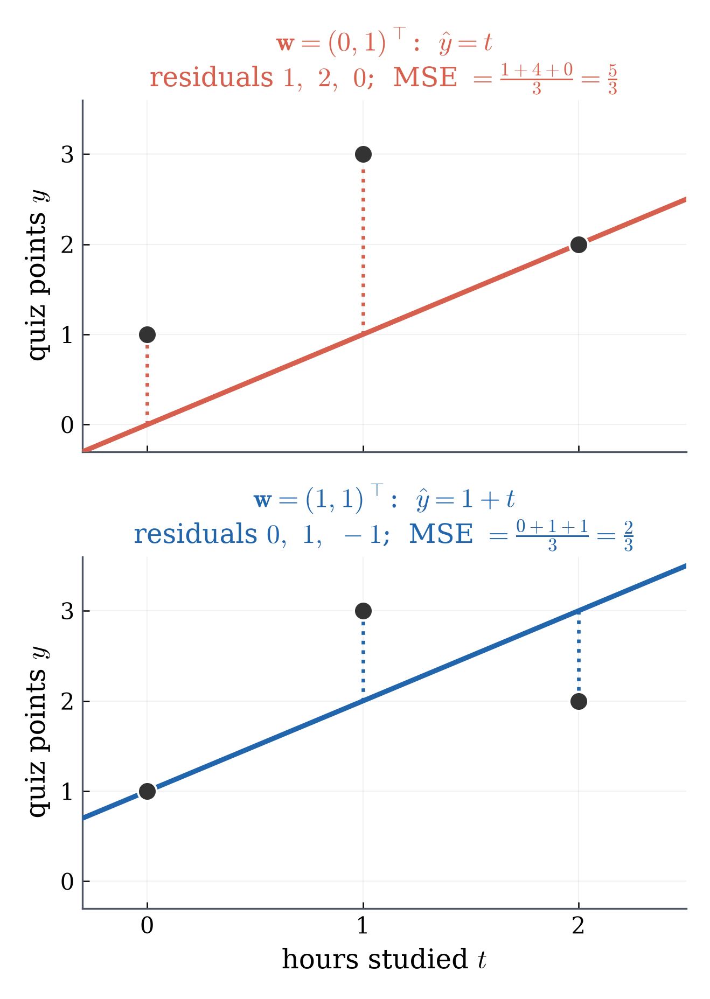
A model is a rule that predicts. Unit 2 (L04) predicted a student’s quiz points \(y\) from the hours studied \(t\) with a line: \(\hat y=w_0+w_1t\).
The rule is fixed once we choose the two numbers \(w_0,w_1\). They are the model’s parameters, \(\mathbf w=(w_0,w_1)^\top\). Choosing the parameters is choosing the model.
How good is a model? L04’s mean squared error: \(\mathrm{MSE}=\frac1n\sum_{i=1}^n(y_i-\hat y_i)^2\), the average squared residual. Better model = smaller error.
Three students: \(\mathbf t=(0,1,2)^\top\) hours, \(\mathbf y=(1,3,2)^\top\) points. With \(\mathbf w=(0,1)^\top\) the rule \(\hat y=t\) has \(\mathrm{MSE}=\frac53\); with \(\mathbf w=(1,1)^\top\) the rule \(\hat y=1+t\) has \(\mathrm{MSE}=\frac23\).
Changing \(w_0\) from \(0\) to \(1\) lowered the error from \(\frac53\) to \(\frac23\): a better model is better parameters. Changing the parameters so that the error goes down is training the model.
The question of this unit: if I change the parameters a little, how does the error change — does it go down, and which change lowers it fastest?
Unit map: one question, six lectures
The question: if I change the parameters a little, how does the error change?
lecture
what this lecture asks
the answer to the question is called
L09
two parameters: change one at a time (after two slides of recall)
partial derivatives
L10
where no change lowers the error: is that point really the lowest?
Pythagoras, and independent columns
L11
change the parameters in any direction: which direction lowers the error fastest?
gradient
L12
any number of features, in one line
\(\nabla\mathrm{SSE}=-2\mathbf r^\top X\)
L13
the change passes through several stages
chain rule
L14
a stage in the middle is a whole vector
Jacobian
It also keeps a promise from the end of Unit 3: Theorem 2 (the largest variance is the largest eigenvalue) was proved there with algebra; the textbook proves it with calculus. Unit 4 builds that calculus, and Unit 5 finishes the textbook’s proof.
You have had Calculus 1 and 2. The first slides are recall, stated in the language of error; the lecture itself is about a model with more than one parameter.
Recall, in the language of error
Three facts from Calculus 1, which is all we need from it. [MASTER]
\(f'(x)=\lim_{h\to0}\dfrac{f(x+h)-f(x)}{h}\) is the change in error per unit change in the parameter (MML Def. 5.2, p.141).
First-order prediction: \(f(x+\Delta x)-f(x)\approx f'(x)\,\Delta x\) for small \(\Delta x\). The derivative does not just report a slope; it predicts what a small parameter change does to the error.
At an interior lowest point \(f'(x)=0\) — necessary, not sufficient. Two functions with \(f'(0)=0\) where \(0\) is not the lowest point: \(f(x)=-x^2\), a hill, highest at \(0\); and \(f(x)=x^3\), which keeps rising through \(0\).
The first-order prediction with numbers: error and slope at \(x=17\)
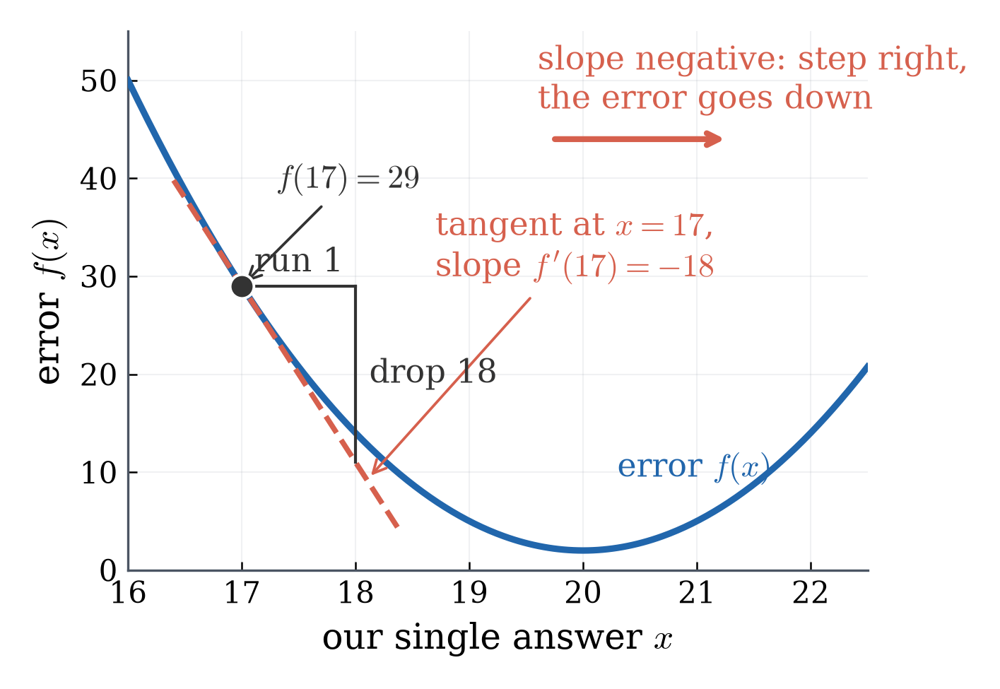
Unit 2's first example: three friends guess your age, \(19\), \(21\), \(20\). Our single answer is \(x\); each guess minus \(x\) is one residual, and the error adds the three squared residuals:
Slope at \(17\). \(f'(17)=-120+6\cdot17=-120+102=-18\).
Predict the error after a step \(\Delta x=0.1\), to \(x=17.1\):
\(\;f(17.1)\approx f(17)+f'(17)\,\Delta x=29+(-18)(0.1)=29-1.8=\mathbf{27.2}\).
Check the prediction: the actual error at \(x=17.1\)
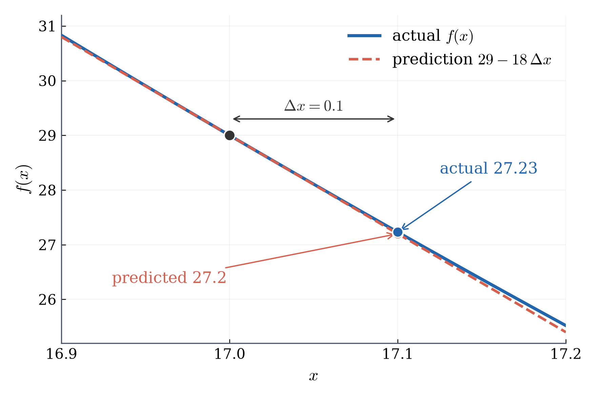
The error: \(f(x)=(19-x)^2+(21-x)^2+(20-x)^2\). The prediction: \(f(17.1)\approx f(17)+f'(17)(0.1)=29+(-18)(0.1)=27.2\).
Actual value. Put \(x=17.1\) into \(f\):
\[\begin{aligned}f(17.1)&=(19-17.1)^2+(21-17.1)^2+(20-17.1)^2\\&=1.9^2+3.9^2+2.9^2\\&=3.61+15.21+8.41=\mathbf{27.23}.\end{aligned}\]
The gap. \(27.23-27.2=0.03\). Close, not equal: the prediction follows the tangent line, and the curve bends away from it.
The data and the question for the whole unit
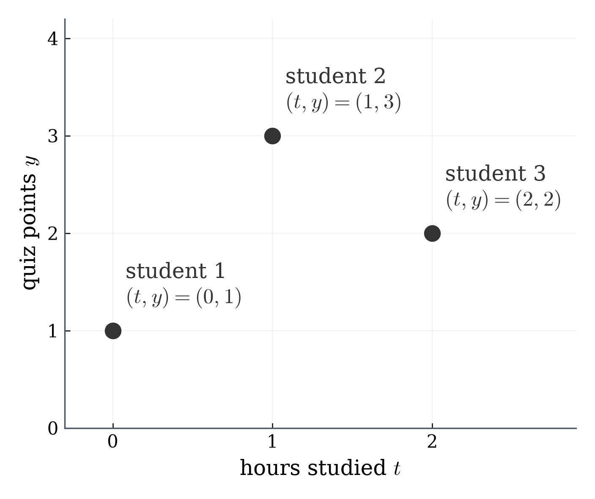
Three students (Quiz 1, Problem 4): hours studied, points scored.
student
hours studied \(t\)
points scored \(y\)
1
\(0\)
\(1\)
2
\(1\)
\(3\)
3
\(2\)
\(2\)
Notation: \(\mathbf t=(0,1,2)^\top\) is the hours column, \(\mathbf y=(1,3,2)^\top\) the points column, \(\hat{\mathbf y}\) the three predictions.
The task: predict a student’s score from the hours they studied — how many points does one more hour buy? Which rule fits these three students best, and what does “best” mean?
Score one rule: residuals and the sum of squared errors
Residuals \(r=y-\hat y\) (data minus prediction): \(1-0=1\), \(3-1=2\), \(2-2=0\).
Squared and added: \(1^2+2^2+0^2=5\) — three times L04’s \(\mathrm{MSE}=\tfrac53\).
Definition (MML §9.2.1, p.294, eq. (9.10b) without its constant factor). The sum of squared errors is \(\mathrm{SSE}=r_1^2+r_2^2+r_3^2=\norm{\mathbf r}^2\). “Best” = smallest \(\mathrm{SSE}\). [MASTER]
Rules to try: first \(\hat y=wt\) (\(w\) = points per hour; it predicts \(0\) at \(0\) hours). But student 1 scored \(1\) after \(0\) hours, so later \(\hat y=w_0+w_1t\): baseline \(w_0\), plus \(w_1\) points per hour.
One parameter: the error \(\mathrm{SSE}(w)\), one student at a time
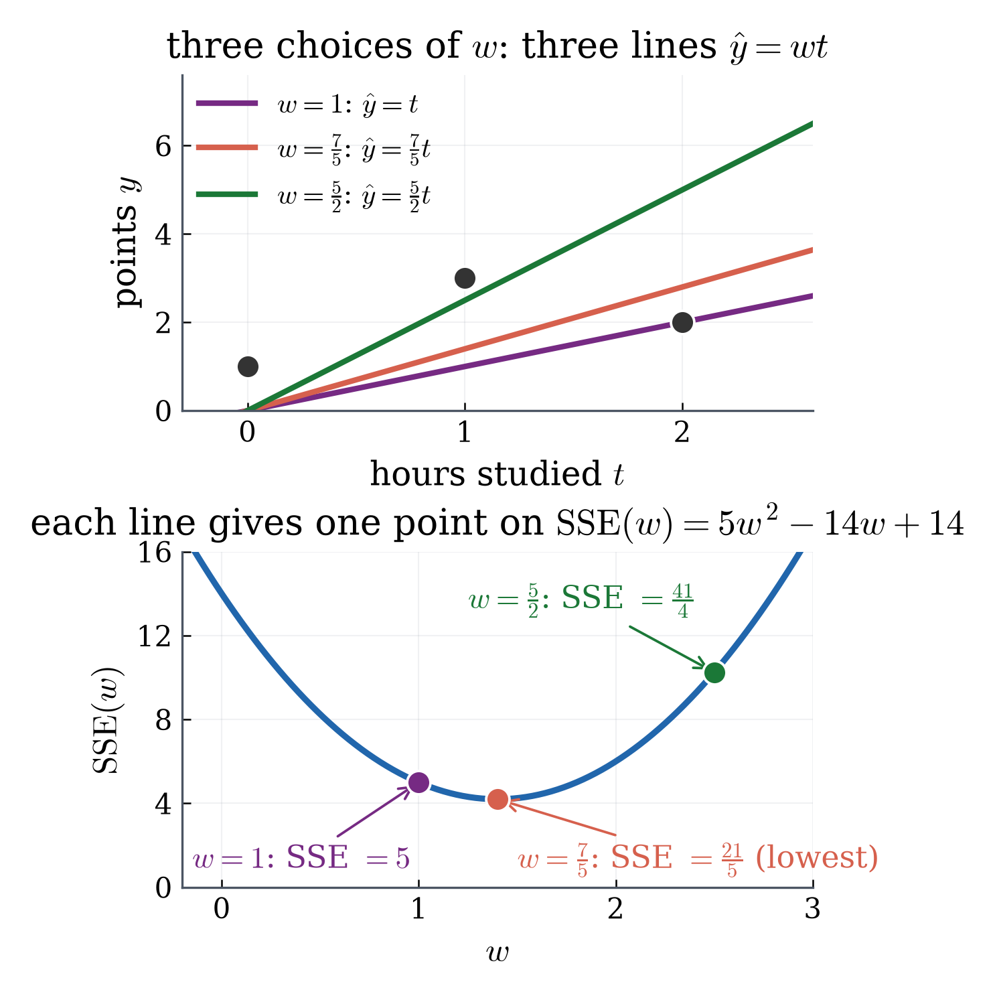
Rule \(\hat y=wt\). Each student gives one residual and one square:
Check at \(w=1\): directly \(1+2^2+0^2=5\); from the formula \(5-14+14=5\) ✓. In the figure, each choice of \(w\) is one line \(\hat y=wt\) (top) and one point on the curve \(\mathrm{SSE}(w)=5w^2-14w+14\) (bottom); the lowest point, at \(w=\tfrac75\), is derived on the next slide.
Lowest, not just flat: the \(w^2\) coefficient \(5\) is positive, so the parabola opens upward and its flat point is its lowest point. Only now does it earn the name \(w^\ast=\frac75\).
Expand one term: \((y_i-wt_i)^2=y_i^2-2w\,t_iy_i+w^2t_i^2\).
Add over the \(n\) students: \(\mathrm{SSE}(w)=\big(\sum t_i^2\big)w^2-2\big(\sum t_iy_i\big)w+\sum y_i^2=(\mathbf t^\top\mathbf t)\,w^2-2\,(\mathbf t^\top\mathbf y)\,w+\mathbf y^\top\mathbf y\).
Our data: \(\mathbf t^\top\mathbf t=0^2+1^2+2^2=5\), \(\mathbf t^\top\mathbf y=0\cdot1+1\cdot3+2\cdot2=7\), \(\mathbf y^\top\mathbf y=1+9+4=14\): that is why \(\mathrm{SSE}(w)=5w^2-14w+14\). The three coefficients are these dot products.
Set it to zero (with \(\mathbf t\neq\mathbf 0\)): \(w^\ast=\dfrac{\mathbf t^\top\mathbf y}{\mathbf t^\top\mathbf t}\), for every dataset. Ours: \(\frac75\).
This is L03’s projection formula \(\lambda=\dfrac{\mathbf b^\top\mathbf x}{\mathbf b^\top\mathbf b}\), with \(\mathbf b=\mathbf t\) (the direction) and \(\mathbf x=\mathbf y\) (the vector projected). And \(\mathbf t^\top\mathbf r=0\) is L03’s picture: at the best \(w\), the residual is perpendicular to \(\mathbf t\).
Why SSE, and not L04's MSE?
L04 measured a fit by the mean squared error \(\mathrm{MSE}=\frac1n\sum_{i=1}^n(y_i-\hat y_i)^2\). Here \(n=3\) students, so \(\mathrm{MSE}=\mathrm{SSE}/3\). Our one-parameter error: \(\mathrm{SSE}(w)=(1-0\cdot w)^2+(3-w)^2+(2-2w)^2=5w^2-14w+14\).
Same best parameter. Dividing by the positive number \(3\) keeps every comparison: \(\mathrm{SSE}(a)\le\mathrm{SSE}(b)\) exactly when \(\mathrm{SSE}(a)/3\le\mathrm{SSE}(b)/3\).
Same flat point. \(\mathrm{MSE}(w)=\frac53w^2-\frac{14}3w+\frac{14}3\), so \(\mathrm{MSE}'(w)=\frac{10}3w-\frac{14}3=\frac{10w-14}{3}\): the \(\mathrm{SSE}\) derivative \(\mathrm{SSE}'(w)=10w-14\) times \(\frac13\), zero at the same \(w=\frac75\).
Different value. At \(w^\ast=\frac75\): \(\mathrm{SSE}=\frac{21}5\) and \(\mathrm{MSE}=\frac{21}5\div3=\frac{7}{5}\). (That this error value equals \(w^\ast\) is a coincidence.)
Why this unit uses SSE: fewer fractions. \(5w^2-14w+14\) has whole-number coefficients; the MSE version has thirds everywhere. With two parameters the difference grows.
Every “best” answer in this unit is the same for SSE and MSE. Only the size of the error, and the arithmetic, change.
Two parameters, and the error becomes a surface
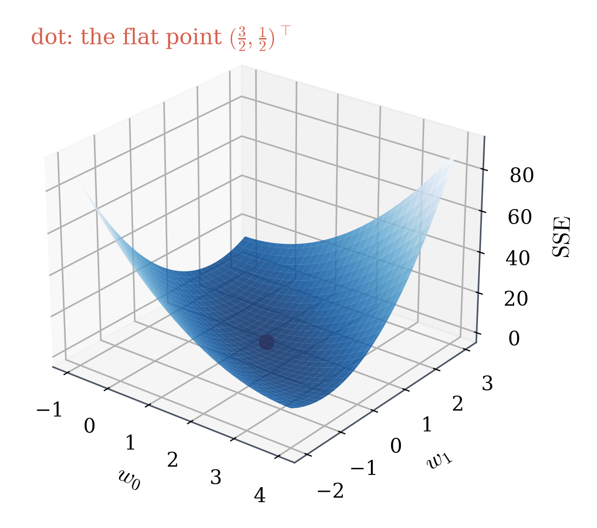
Same three students, rule \(\hat y=w_0+w_1t\): a baseline \(w_0\) plus \(w_1\) points per hour.
In matrix form the same rule is \(\hat{\mathbf y}=X\mathbf w\) with \(X=\begin{bmatrix}1&0\\1&1\\1&2\end{bmatrix}\), \(\mathbf w=(w_0,w_1)^\top\) — the same \(X\) as Quiz 1’s Problem 4, one row per student, a column of ones for the intercept.
The parameter is now a point in a plane, and the error is a surface above it (the figure).
Expand the three squares, one at a time
The error for \(\hat y=w_0+w_1t\): \(\mathrm{SSE}(w_0,w_1)=(1-w_0)^2+(3-w_0-w_1)^2+(2-w_0-2w_1)^2\). Each square has the shape \((a-b-c)^2\), and
\[(a-b-c)^2=a^2+b^2+c^2-2ab-2ac+2bc .\]
\((1-w_0)^2\) (\(a=1,\ b=w_0\), no \(c\)): \(\;1+w_0^2-2w_0\).
Check at \((1,1)^\top\): directly \((1-1)^2+(3-1-1)^2+(2-1-2)^2=0+1+1=2\); from the formula \(3+6+5-12-14+14=2\) ✓.
As MSE (divide by \(3\)): \(w_0^2+2w_0w_1+\frac53w_1^2-4w_0-\frac{14}3w_1+\frac{14}3\) — thirds again, which is why we use SSE.
Training (changing the parameters so that the error goes down) is now a walk on the error surface: from \((0,0)^\top\), error \(14\), to \((1,1)^\top\), error \(2\), is one step downhill. But “change the parameters a little” now has more than one meaning: which way is down, and how steep?
Freeze one parameter: a slice of the error surface, and its slope
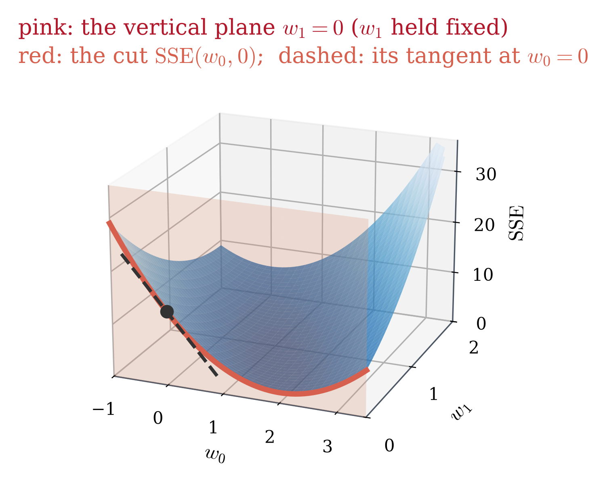
The error we are working with: \(\mathrm{SSE}(w_0,w_1)=3w_0^2+6w_0w_1\) \(+5w_1^2-12w_0-14w_1+14\).
Hold \(w_1\) fixed at \(0\). The points with \(w_1=0\) form a vertical plane (pink). The plane cuts the error surface along a curve (red).
On the red curve only \(w_0\) moves. Put \(w_1=0\) into the error; every term with \(w_1\) vanishes: \(\mathrm{SSE}(w_0,0)=3w_0^2-12w_0+14\).
Its slope is the ordinary Calculus 1 derivative \(\frac{d}{dw_0}\big(3w_0^2-12w_0+14\big)=6w_0-12\).
At \(w_0=0\): height \(\mathrm{SSE}(0,0)=14\) (the dot), slope \(6\cdot0-12=-12\) (the dashed tangent).
Hold \(w_0\) fixed at \(0\) instead: the plane \(w_0=0\) cuts the curve \(\mathrm{SSE}(0,w_1)=5w_1^2-14w_1+14\), with slope \(10w_1-14\), which is \(-14\) at \(w_1=0\).
Two slopes at \((0,0)^\top\): \(-12\) along \(w_0\), \(-14\) along \(w_1\). Each is an ordinary derivative taken with the other parameter frozen — a kind of derivative that gets its own name.
Change one parameter, hold the other still
The error we are working with: \(\mathrm{SSE}(w_0,w_1)=(1-w_0)^2+(3-w_0-w_1)^2+(2-w_0-2w_1)^2\) \(=3w_0^2+6w_0w_1+5w_1^2-12w_0-14w_1+14\).
Definition (MML Def. 5.5, p.146). The partial derivative of \(g(w_0,w_1)\) with respect to \(w_0\) is
\[\frac{\partial g}{\partial w_0}=\lim_{h\to0}\frac{g(w_0+h,\;w_1)-g(w_0,\;w_1)}{h},\]
the ordinary derivative of \(w_0\mapsto g(w_0,w_1)\) with \(w_1\) held fixed; similarly for \(w_1\). [MASTER]
The two slices at \((0,0)^\top\): \(\frac{\partial\,\mathrm{SSE}}{\partial w_0}(0,0)=-12\) (freeze \(w_1=0\)), \(\frac{\partial\,\mathrm{SSE}}{\partial w_1}(0,0)=-14\) (freeze \(w_0=0\)): slopes of the error surface along the axes. [MASTER]
Nothing new to compute with: treat the other parameter as a constant and use the rules from Calculus 1.
Example: the term \(6w_0w_1\) with respect to \(w_0\). With \(w_1\) held fixed, \(6w_0w_1=(6w_1)\cdot w_0\) is a constant times \(w_0\). Its derivative is \(6w_1\).
The same term with respect to \(w_1\). Now \(w_0\) is held fixed: \(6w_0w_1=(6w_0)\cdot w_1\), derivative \(6w_0\).
A term without \(w_0\), like \(5w_1^2\), is a constant when \(w_1\) is held fixed: its \(w_0\) partial derivative is \(0\).
The two partial derivatives of SSE, one term at a time
The error we are working with: \(\mathrm{SSE}(w_0,w_1)=(1-w_0)^2+(3-w_0-w_1)^2+(2-w_0-2w_1)^2\) \(=3w_0^2+6w_0w_1+5w_1^2-12w_0-14w_1+14\).
As slopes: move \(w_0\) alone and the error changes at the rate \(6w_0+6w_1-12\). “But \(w_1\) is held fixed — why is \(w_1\) in it?” Fixed is not absent: the rate depends on where \(w_1\) is frozen: \(-12\) at \((0,0)^\top\), \(\;6\cdot0+6\cdot1-12=-6\) at \((0,1)^\top\).
The same two partial derivatives, one student at a time
Rule \(\hat y=w_0+w_1t\); student \(i\)’s residual \(r_i=y_i-w_0-w_1t_i\); \(\;\mathrm{SSE}=r_1^2+r_2^2+r_3^2=(1-w_0)^2+(3-w_0-w_1)^2+(2-w_0-2w_1)^2\). Expanded into a polynomial first, it gave \(\partial\,\mathrm{SSE}/\partial w_0=6w_0+6w_1-12\) and \(\partial\,\mathrm{SSE}/\partial w_1=6w_0+10w_1-14\).
Now do not expand. Differentiate each square with the Calculus 1 chain rule:
The numbers multiplying \(r_1,r_2,r_3\) in each sum are a column of \(X=\left[\begin{smallmatrix}1&0\\1&1\\1&2\end{smallmatrix}\right]\): the ones \((1,1,1)^\top\) for \(w_0\), the hours \((0,1,2)^\top\) for \(w_1\).
Each partial derivative of SSE is \(-2\times(\text{a column of }X)^\top\mathbf r\)
Data \(\mathbf y=(1,3,2)^\top\); \(X\) has columns \(\mathbf 1=(1,1,1)^\top\) and \(\mathbf t=(0,1,2)^\top\); residual \(\mathbf r=\mathbf y-X\mathbf w=(1-w_0,\;3-w_0-w_1,\;2-w_0-2w_1)^\top\). Differentiating each \(r_i^2\) with the chain rule and adding over the three students:
\[\frac{\partial\,\mathrm{SSE}}{\partial w_0}=-2\,(r_1+r_2+r_3)=-2\,\mathbf 1^\top\mathbf r,\qquad \frac{\partial\,\mathrm{SSE}}{\partial w_1}=-2\,(0\,r_1+1\,r_2+2\,r_3)=-2\,\mathbf t^\top\mathbf r .\]
Expand back, \(w_1\): \(-2\big[0+(3-w_0-w_1)+2(2-w_0-2w_1)\big]=-2\,(7-3w_0-5w_1)=6w_0+10w_1-14\) ✓ Both agree with the partial derivatives of the expanded polynomial \(3w_0^2+6w_0w_1+5w_1^2-12w_0-14w_1+14\).
At one point, \(\mathbf w=(0,1)^\top\) (the rule \(\hat y=t\)). Polynomial: \(6\cdot0+6\cdot1-12=-6\) and \(6\cdot0+10\cdot1-14=-4\).
Dot products: predictions \(0,1,2\), so \(\mathbf r=(1,2,0)^\top\); \(\mathbf 1^\top\mathbf r=1+2+0=3\) and \(\mathbf t^\top\mathbf r=0\cdot1+1\cdot2+2\cdot0=2\); so \(-2\cdot3=-6\) and \(-2\cdot2=-4\) ✓
One partial derivative per column of \(X\): the one-parameter shape again
Data \(\mathbf y=(1,3,2)^\top\), hours \(\mathbf t=(0,1,2)^\top\), ones \(\mathbf 1=(1,1,1)^\top\). With one parameter, \(\mathrm{SSE}(w)=\sum_i(y_i-wt_i)^2=5w^2-14w+14\) had \(\mathrm{SSE}'(w)=10w-14=-2\,\mathbf t^\top\mathbf r\), with \(\mathbf r=\mathbf y-w\mathbf t\). With two, each partial derivative is \(-2\times\)(a column of \(X\))\(^\top\mathbf r\).
\(\mathbf 1^\top\mathbf r=0\) and \(\mathbf t^\top\mathbf r=0\)
The same shape as with one parameter: one partial derivative per column of \(X\), each equal to \(-2\times(\text{that column})^\top\mathbf r\). One parameter meant one column, \(\mathbf t\), and one derivative. L11 puts the two partial derivatives into one row; L12 proves the shape for any number of columns.
The two partial derivatives of SSE at one point: \((w_0,w_1)^\top=(0,0)^\top\)
What the signs say: both negative. Raising \(w_0\) a little with \(w_1\) held at \(0\) lowers the error; so does raising \(w_1\) a little with \(w_0\) held at \(0\). So \((0,0)^\top\) is not flat, and not lowest.
First-order prediction, one parameter at a time, step \(0.1\):
step
prediction
actual \(\mathrm{SSE}\) (expanded formula)
gap
\(w_0:\ 0\to0.1\)
\(14+(-12)(0.1)=12.8\)
\(3(0.1)^2-12(0.1)+14=12.83\)
\(0.03\)
\(w_1:\ 0\to0.1\)
\(14+(-14)(0.1)=12.6\)
\(5(0.1)^2-14(0.1)+14=12.65\)
\(0.05\)
A nonzero partial derivative is a way down: step against its sign. So at a lowest point no axis can go down, and both partial derivatives must be \(0\). True at every lowest point?
Why every partial derivative of SSE is zero at a lowest point
Theorem. Let \(\mathrm{SSE}\) be differentiable. If it is smallest at an interior point \((w_0^\ast,w_1^\ast)^\top\) — no boundary, and here the parameters range over all of \(\R^2\) — then both partial derivatives are zero there. [MASTER]
Step 1: freeze \(w_1=w_1^\ast\). Define the one-variable function \(u(w_0)=\mathrm{SSE}(w_0,w_1^\ast)\). For our SSE: \(u(w_0)=3w_0^2+(6w_1^\ast-12)\,w_0+(5w_1^{\ast2}-14w_1^\ast+14)\).
Step 2: \(u\) is smallest at \(w_0^\ast\). \(\mathrm{SSE}(w_0^\ast,w_1^\ast)\le\mathrm{SSE}(w_0,w_1)\) for every pair \((w_0,w_1)^\top\), so also for the pairs \((w_0,w_1^\ast)^\top\). That says \(u(w_0^\ast)\le u(w_0)\) for every \(w_0\).
Step 3: use the Calculus 1 fact. \(w_0\) ranges over all of \(\R\), so \(w_0^\ast\) is interior. Calculus 1: at an interior lowest point of a differentiable one-variable function the derivative is \(0\). So \(u'(w_0^\ast)=0\).
Step 4: \(u'\) is the partial derivative. \(u'\) differentiates in \(w_0\) with \(w_1\) held at \(w_1^\ast\) — Def. 5.5. So \(\frac{\partial\,\mathrm{SSE}}{\partial w_0}(w_0^\ast,w_1^\ast)=0\). Ours: \(u'(w_0)=6w_0+6w_1^\ast-12\), which is \(\frac{\partial\,\mathrm{SSE}}{\partial w_0}=6w_0+6w_1-12\) at \(w_1=w_1^\ast\).
Step 5: the other one. Freeze \(w_0=w_0^\ast\) instead: \(v(w_1)=\mathrm{SSE}(w_0^\ast,w_1)\), and Steps 2–4 give \(\frac{\partial\,\mathrm{SSE}}{\partial w_1}(w_0^\ast,w_1^\ast)=0\). Ours: \(v'(w_1)=6w_0^\ast+10w_1-14\), which is \(\frac{\partial\,\mathrm{SSE}}{\partial w_1}=6w_0+10w_1-14\) at \(w_0=w_0^\ast\).
Solve \(\partial\,\mathrm{SSE}/\partial w_0=0\) and \(\partial\,\mathrm{SSE}/\partial w_1=0\)
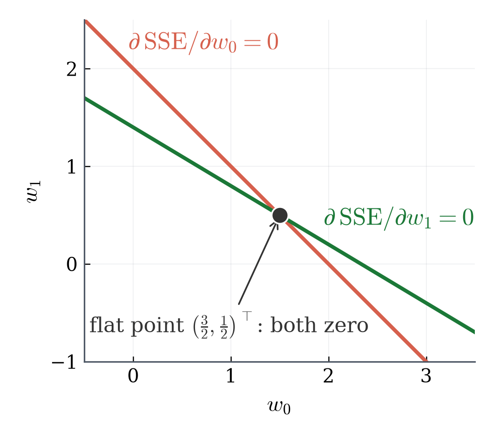
From \(\mathrm{SSE}(w_0,w_1)=(1-w_0)^2+(3-w_0-w_1)^2+(2-w_0-2w_1)^2\) \(=3w_0^2+6w_0w_1+5w_1^2-12w_0-14w_1+14\), set both partial derivatives to zero:
Move the constants to the right. \((1)\;\;6w_0+6w_1=12\) and \((2)\;\;6w_0+10w_1=14\).
Subtract (1) from (2). \(6w_0-6w_0=0\), \(\;10w_1-6w_1=4w_1\), \(\;14-12=2\). So \(4w_1=2\) and \(w_1=\tfrac12\).
Put \(w_1=\tfrac12\) into (1). \(6w_0+6\cdot\tfrac12=12\), so \(6w_0+3=12\), \(6w_0=9\), \(w_0=\tfrac96=\tfrac32\).
Check in (2). \(6\cdot\tfrac32+10\cdot\tfrac12=9+5=14\) ✓.
Both partial derivatives are zero at exactly one point, the flat point \(\mathbf w_{\text{flat}}=\left(\tfrac32,\tfrac12\right)^\top\). MML calls such a point a stationary point (Ch. 7, p.225).
⚠️ Not yet called \(\mathbf w^\ast\). All we know is that both partial derivatives vanish here — and flat need not be lowest: \(f(x)=-x^2\) is flat at \(0\) and highest there; \(f(x)=x^3\) is flat at \(0\) and keeps rising through it.
What the flat point predicts, and its error
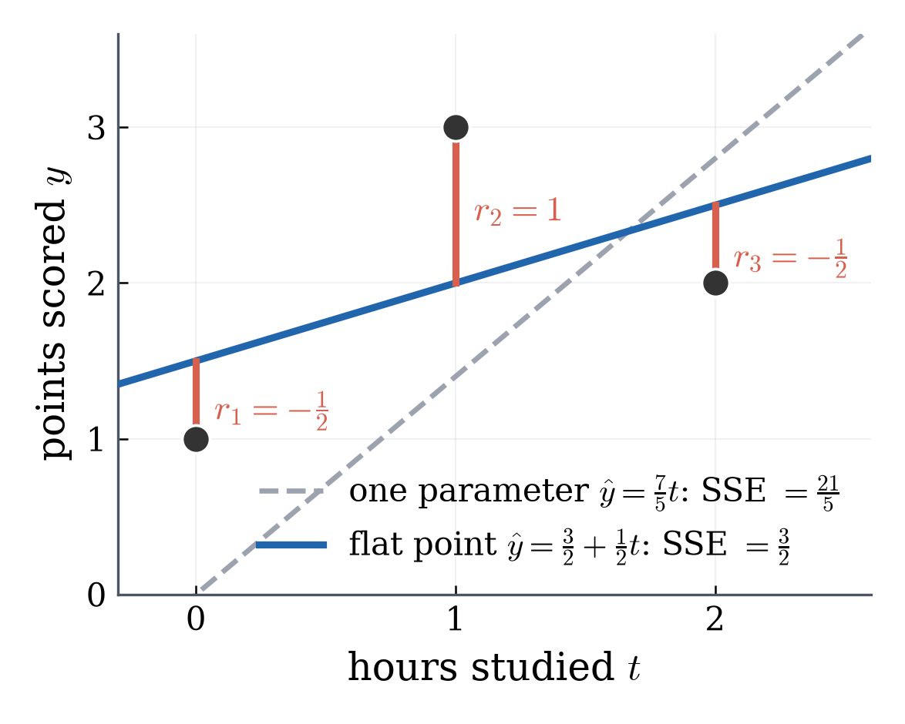
The flat point \(\mathbf w_{\text{flat}}=\left(\tfrac32,\tfrac12\right)^\top\) (both partial derivatives zero) gives the rule \(\hat y=\tfrac32+\tfrac12t\): a baseline of \(\tfrac32\) points, plus \(\tfrac12\) point per hour. \(\mathrm{SSE}\) is the sum of the \(r^2\) column.
\(t\)
\(y\)
\(\hat y=\tfrac32+\tfrac12t\)
\(r=y-\hat y\)
\(r^2\)
\(0\)
\(1\)
\(\tfrac32\)
\(-\tfrac12\)
\(\tfrac14\)
\(1\)
\(3\)
\(\tfrac32+\tfrac12=2\)
\(1\)
\(1\)
\(2\)
\(2\)
\(\tfrac32+1=\tfrac52\)
\(-\tfrac12\)
\(\tfrac14\)
\(\mathbf r_{\text{flat}}=\left(-\tfrac12,1,-\tfrac12\right)^\top\) and \(\mathrm{SSE}(\mathbf w_{\text{flat}})=\tfrac14+1+\tfrac14=\tfrac32\). As MSE: \(\tfrac32\div3=\tfrac12\).
Check with the expanded formula \(\mathrm{SSE}(w_0,w_1)=3w_0^2+6w_0w_1+5w_1^2-12w_0-14w_1+14\) at \(\left(\tfrac32,\tfrac12\right)^\top\): \(\tfrac{27}4+\tfrac92+\tfrac54-18-7+14=\tfrac{50}4-11=\tfrac32\) ✓.
The best one-parameter rule \(\hat y=\tfrac75t\) had \(\mathrm{SSE}=\tfrac{21}{5}=4.2\); two parameters give \(\tfrac32=1.5\). That drop is what the baseline \(w_0\) bought.
Setting both partial derivatives of SSE to zero gives Unit 2's normal equation
\(\frac{\partial\,\mathrm{SSE}}{\partial w_0}=6w_0+6w_1-12=0\) and \(\frac{\partial\,\mathrm{SSE}}{\partial w_1}=6w_0+10w_1-14=0\), divided by \(2\), as one matrix equation:
\(X^\top X\), entry by entry. The columns of \(X\) are the ones \((1,1,1)^\top\) and the hours \(\mathbf t=(0,1,2)^\top\). Entry \((i,j)\) is column \(i\) dotted with column \(j\). Ones with ones: \(1+1+1=3\) (the number of students). Ones with hours: \(0+1+2=3\). Hours with hours: \(0^2+1^2+2^2=5\).
\(X^\top\mathbf y\), entry by entry, with \(\mathbf y=(1,3,2)^\top\). Ones with scores: \(1+3+2=6\). Hours with scores: \(0\cdot1+1\cdot3+2\cdot2=7\).
So \(X^\top X=\begin{bmatrix}3&3\\3&5\end{bmatrix}\) and \(X^\top\mathbf y=(6,7)^\top\) — the same numbers as in the matrix equation at the top of this slide.
So “set both partial derivatives to zero” is \(X^\top X\mathbf w=X^\top\mathbf y\) — L04's normal equation, reached by calculus instead of geometry. Its solution \(\left(\tfrac32,\tfrac12\right)^\top\) is your answer to Quiz 1, Problem 4(b).
L09 takeaways
Partial derivative: differentiate in one parameter with the others held fixed (MML Def. 5.5, p.146). For SSE, go one term at a time. [MASTER]
Each partial derivative of SSE is \(-2\times\)(its column of \(X\))\(^\top\mathbf r\): \(\partial\,\mathrm{SSE}/\partial w_0=-2\,\mathbf 1^\top\mathbf r\), \(\partial\,\mathrm{SSE}/\partial w_1=-2\,\mathbf t^\top\mathbf r\) — the one-parameter \(\mathrm{SSE}'(w)=-2\,\mathbf t^\top\mathbf r\), once per column. [MASTER]
At a lowest point every partial derivative is zero — proved by freezing the other parameter and using the one-variable fact. [MASTER]
For \(\hat y=w_0+w_1t\) the two equations \(\partial\,\mathrm{SSE}/\partial w_0=0\), \(\partial\,\mathrm{SSE}/\partial w_1=0\) are \(X^\top X\mathbf w=X^\top\mathbf y\): here the flat point is \(\left(\tfrac32,\tfrac12\right)^\top\) with \(\mathrm{SSE}=\tfrac32\), against \(\tfrac{21}{5}\) for one parameter. [MASTER]
SSE and L04's MSE differ by the factor \(n\): same best parameters, same flat points, different error values. [MASTER]
Recall carried in: the derivative as change per unit change, and the first-order prediction \(f(x+\Delta x)\approx f(x)+f'(x)\,\Delta x\) (age example: predicted \(27.2\), actual \(27.23\)). [MASTER]
We have a flat point. Flat is not the same as lowest — and with two parameters there are far more ways to be flat. L10 settles it.
L10 — Why the Flat Point Is the Lowest
L09 found the flat point \(\mathbf w_{\text{flat}}=\left(\tfrac32,\tfrac12\right)^\top\), where both partial derivatives of the error \(\mathrm{SSE}\) are zero. L10 proves that no other \(\mathbf w\) has a smaller error.
Reading: MML §3.8, pp.81–90 (orthogonal projections) as background; the argument itself is Unit 2’s Pythagoras.
Definitions used today: orthogonal vectors (MML Def. 3.7, p.77), linear independence (MML Def. 2.12, p.40), rank (MML §2.6.2, p.47).
Where L09 left us: a flat point, not yet a lowest point
Model \(\hat y=w_0+w_1t\) (\(t\) = hours, \(y\) = points), so \(\hat{\mathbf y}=X\mathbf w\); \(\;\mathrm{SSE}=(1-w_0)^2+(3-w_0-w_1)^2+(2-w_0-2w_1)^2\), expanded:
L09: \(\partial\,\mathrm{SSE}/\partial w_0=6w_0+6w_1-12\) and \(\partial\,\mathrm{SSE}/\partial w_1=6w_0+10w_1-14\) both vanish at \(\mathbf w_{\text{flat}}=\left(\tfrac32,\tfrac12\right)^\top\): \(9+3-12=0\), \(9+5-14=0\).
But \(x^3\) is flat at \(0\) and not lowest. Flat is about one point; lowest compares with every point.
To show: \(\mathbf w_{\text{flat}}\) is a global minimum (MML Ch. 7 introduction, p.225): \(\mathrm{SSE}(\mathbf w)\ge\tfrac32\) for every \(\mathbf w\in\R^2\). [MASTER]
Before the theorem: one \(\mathbf w\), one right triangle
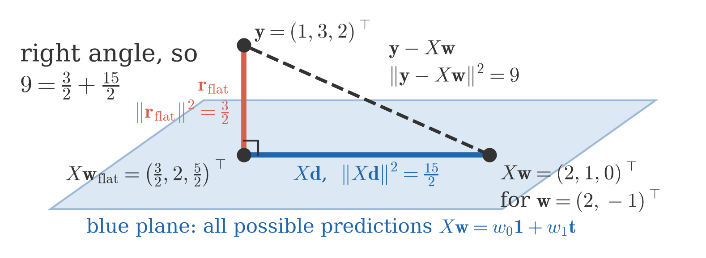
Data \(\mathbf y=(1,3,2)^\top\); flat point \(\mathbf w_{\text{flat}}=\left(\tfrac32,\tfrac12\right)^\top\); its residual \(\mathbf r_{\text{flat}}=\mathbf y-X\mathbf w_{\text{flat}}=\left(-\tfrac12,1,-\tfrac12\right)^\top\).
The blue plane holds every prediction vector \(X\mathbf w=w_0\mathbf 1+w_1\mathbf t\), with columns \(\mathbf 1=(1,1,1)^\top\), \(\mathbf t=(0,1,2)^\top\). \(\mathbf y\) is not in it: no line fits all three students exactly.
Red leg: \(\mathbf r_{\text{flat}}\), from \(X\mathbf w_{\text{flat}}\) up to \(\mathbf y\). Squared length \(\tfrac14+1+\tfrac14=\tfrac32\). It looks perpendicular to the plane; a proof will have to show that it is.
Blue leg: take another \(\mathbf w\), here \((2,-1)^\top\). The change in predictions \(X\mathbf d=X\mathbf w-X\mathbf w_{\text{flat}}=\left(\tfrac12,-1,-\tfrac52\right)^\top\) lies in the plane. Squared length \(\tfrac14+1+\tfrac{25}{4}=\tfrac{15}{2}\).
If every \(\mathbf w\) gives such a right triangle, then \(\mathrm{SSE}(\mathbf w)=\tfrac32+\) a square \(\ge\tfrac32\), and the flat point is the lowest. Does it?
Theorem: the flat point is a global minimum — and the plan of its proof
Theorem (Pythagoras for least squares). For every \(\mathbf w\in\R^2\),
\[\mathrm{SSE}(\mathbf w)=\mathrm{SSE}(\mathbf w_{\text{flat}})+\norm{X(\mathbf w-\mathbf w_{\text{flat}})}^2 .\]
In particular \(\mathrm{SSE}(\mathbf w)\ge\mathrm{SSE}(\mathbf w_{\text{flat}})=\norm{\mathbf r_{\text{flat}}}^2=\tfrac14+1+\tfrac14=\tfrac32\): the flat point is a global minimum. [MASTER]
The proof has four steps, one per slide, each checked at \(\mathbf w=(2,-1)^\top\):
Split. Write \(\mathbf w=\mathbf w_{\text{flat}}+\mathbf d\); then the residual of \(\mathbf w\) is \(\mathbf r_{\text{flat}}-X\mathbf d\).
Orthogonality. From \(X^\top\mathbf r_{\text{flat}}=\mathbf 0\): \(\mathbf r_{\text{flat}}\) is orthogonal to \(X\mathbf d\), whatever \(\mathbf d\) is.
Pythagoras. Expand \(\norm{\mathbf r_{\text{flat}}-X\mathbf d}^2\); the cross term is zero.
Step 1: split any \(\mathbf w\) into the flat point plus a step
Notation. The residual of \(\mathbf w\) is \(\mathbf y-X\mathbf w\), and \(\mathrm{SSE}(\mathbf w)=\norm{\mathbf y-X\mathbf w}^2\). The flat point is \(\mathbf w_{\text{flat}}=\left(\tfrac32,\tfrac12\right)^\top\), its residual \(\mathbf r_{\text{flat}}=\mathbf y-X\mathbf w_{\text{flat}}\).
Take any \(\mathbf w\). Call the step from the flat point to it \(\;\mathbf d=\mathbf w-\mathbf w_{\text{flat}}\), so \(\;\mathbf w=\mathbf w_{\text{flat}}+\mathbf d\).
Residual of \(\mathbf w\): \(\;\mathbf y-X\mathbf w=\mathbf y-X(\mathbf w_{\text{flat}}+\mathbf d)\).
A matrix times a sum is the sum of the products: \(\;X(\mathbf w_{\text{flat}}+\mathbf d)=X\mathbf w_{\text{flat}}+X\mathbf d\).
So \(\;\mathbf y-X\mathbf w=\mathbf y-X\mathbf w_{\text{flat}}-X\mathbf d\).
The first two terms, \(\mathbf y-X\mathbf w_{\text{flat}}\), are \(\mathbf r_{\text{flat}}\). Therefore
\[\mathbf y-X\mathbf w=\mathbf r_{\text{flat}}-X\mathbf d .\]
In words: the residual at any \(\mathbf w\) is the flat point’s residual, minus the change in predictions \(X\mathbf d\) caused by the step \(\mathbf d\).
So \(\;\mathrm{SSE}(\mathbf w)=\norm{\mathbf y-X\mathbf w}^2=\norm{\mathbf r_{\text{flat}}-X\mathbf d}^2\). The rest of the proof is about the squared length \(\norm{\mathbf r_{\text{flat}}-X\mathbf d}^2\). [MASTER]
Step 1 with numbers: the split \(\mathbf y-X\mathbf w=\mathbf r_{\text{flat}}-X\mathbf d\) at \(\mathbf w=(2,-1)^\top\)
The step: \(\;\mathbf d=\mathbf w-\mathbf w_{\text{flat}}=\left(2-\tfrac32,\;-1-\tfrac12\right)^\top=\left(\tfrac12,-\tfrac32\right)^\top\).
Left side \(\mathbf y-X\mathbf w\), directly. Predictions \(X\mathbf w\): \(\;2+0(-1)=2,\;\;2+1(-1)=1,\;\;2+2(-1)=0\). Residual \(\mathbf y-X\mathbf w\): \(\;1-2=-1,\;\;3-1=2,\;\;2-0=2\).
Change in predictions \(X\mathbf d\): \(\;\tfrac12+0\left(-\tfrac32\right)=\tfrac12,\;\;\tfrac12+1\left(-\tfrac32\right)=-1,\;\;\tfrac12+2\left(-\tfrac32\right)=-\tfrac52\). The table builds the right side \(\mathbf r_{\text{flat}}-X\mathbf d\):
student (hours \(t\))
\(\mathbf r_{\text{flat}}\)
\(X\mathbf d\)
\(\mathbf r_{\text{flat}}-X\mathbf d\)
\(\mathbf y-X\mathbf w\) (direct)
\(t=0\)
\(-\tfrac12\)
\(\tfrac12\)
\(-\tfrac12-\tfrac12=-1\)
\(-1\) ✓
\(t=1\)
\(1\)
\(-1\)
\(1-(-1)=2\)
\(2\) ✓
\(t=2\)
\(-\tfrac12\)
\(-\tfrac52\)
\(-\tfrac12-\left(-\tfrac52\right)=2\)
\(2\) ✓
The direct residual and \(\mathbf r_{\text{flat}}-X\mathbf d\) are the same vector \((-1,2,2)^\top\): the split is exact.
The two partial derivatives of \(\mathrm{SSE}\) set to zero: \(\;6w_0+6w_1-12=0\), \(\;6w_0+10w_1-14=0\). Divide by 2: \(\;3w_0+3w_1=6\), \(\;3w_0+5w_1=7\).
The halved pair is \(X^\top X\mathbf w=X^\top\mathbf y\), with solution \(\mathbf w_{\text{flat}}=\left(\tfrac32,\tfrac12\right)^\top\): entries of \(X^\top X\) are \(1+1+1=3\), \(0+1+2=3\), \(0+1+4=5\), and \(X^\top\mathbf y=(1+3+2,\;0+3+4)^\top=(6,7)^\top\).
Move everything to one side: \(\;X^\top\mathbf y-X^\top X\mathbf w_{\text{flat}}=\mathbf 0\).
Factor \(X^\top\) out on the left: \(\;X^\top(\mathbf y-X\mathbf w_{\text{flat}})=\mathbf 0\).
The bracket \(\mathbf y-X\mathbf w_{\text{flat}}\) is the flat point’s residual \(\mathbf r_{\text{flat}}\): \(\;X^\top\mathbf r_{\text{flat}}=\mathbf 0\).
Each move can be undone: \(\;X^\top X\mathbf w_{\text{flat}}=X^\top\mathbf y\iff X^\top\mathbf r_{\text{flat}}=\mathbf 0\).
Calculus (both slopes of \(\mathrm{SSE}\) zero) and geometry (L04: residual \(\perp\) every column of \(X\)) give the same equation.[MASTER]
\(X^\top\mathbf r_{\text{flat}}=\mathbf 0\) entry by entry: \(\mathbf r_{\text{flat}}\) is orthogonal to each column of \(X\)
Notation. \(\mathbf r_{\text{flat}}=\mathbf y-X\mathbf w_{\text{flat}}=\left(1-\tfrac32,\;3-2,\;2-\tfrac52\right)^\top=\left(-\tfrac12,1,-\tfrac12\right)^\top\), from \(\mathbf y=(1,3,2)^\top\), \(\mathbf w_{\text{flat}}=\left(\tfrac32,\tfrac12\right)^\top\). The columns of \(X\) are the ones column \(\mathbf 1=(1,1,1)^\top\) and the hours column \(\mathbf t=(0,1,2)^\top\); they are the rows of \(X^\top\).
Entry 1 is \(\mathbf 1^\top\mathbf r_{\text{flat}}=0\): the three residuals add up to zero.
Entry 2 is \(\mathbf t^\top\mathbf r_{\text{flat}}=0\): each residual times that student’s hours, added up, is zero.
An inner product of zero is exactly what orthogonal means (MML Def. 3.7, p.77). So \(\mathbf r_{\text{flat}}\perp\mathbf 1\) and \(\mathbf r_{\text{flat}}\perp\mathbf t\).
One sentence to remember: at the flat point, the residual is orthogonal to every column of \(X\).[MASTER]
Step 3: \(\mathbf r_{\text{flat}}\) is orthogonal to \(X\mathbf d\), for every step \(\mathbf d\)
Notation. Columns of \(X\): \(\mathbf 1=(1,1,1)^\top\), \(\mathbf t=(0,1,2)^\top\). \(\;\mathbf r_{\text{flat}}=\left(-\tfrac12,1,-\tfrac12\right)^\top\), and \(X^\top\mathbf r_{\text{flat}}=\mathbf 0\) (Step 2), i.e. \(\mathbf 1^\top\mathbf r_{\text{flat}}=0\) and \(\mathbf t^\top\mathbf r_{\text{flat}}=0\).
\(X\mathbf d=d_0\,\mathbf 1+d_1\,\mathbf t\) is a combination of the columns of \(X\). The inner product \((X\mathbf d)^\top\mathbf r_{\text{flat}}\), in two ways:
Column by column: \(\;(X\mathbf d)^\top\mathbf r_{\text{flat}}=d_0\,\underbrace{\mathbf 1^\top\mathbf r_{\text{flat}}}_{0}+d_1\,\underbrace{\mathbf t^\top\mathbf r_{\text{flat}}}_{0}=0\).
In one line, using \((AB)^\top=B^\top A^\top\): \(\;(X\mathbf d)^\top\mathbf r_{\text{flat}}=\mathbf d^\top X^\top\mathbf r_{\text{flat}}=\mathbf d^\top\big(X^\top\mathbf r_{\text{flat}}\big)=\mathbf d^\top\mathbf 0=0\).
No condition on \(\mathbf d\) was used: whatever step we take, the change in predictions \(X\mathbf d\) is orthogonal to \(\mathbf r_{\text{flat}}\).
For any two vectors \(\mathbf a,\mathbf b\), multiply out \(\norm{\mathbf a-\mathbf b}^2=(\mathbf a-\mathbf b)^\top(\mathbf a-\mathbf b)\) term by term (\(\mathbf b^\top\mathbf a\) and \(\mathbf a^\top\mathbf b\) are the same number):
Take \(\mathbf a=\mathbf r_{\text{flat}}\), \(\mathbf b=X\mathbf d\). By Step 1, \(\;\mathrm{SSE}(\mathbf w)=\norm{\mathbf r_{\text{flat}}-X\mathbf d}^2=\norm{\mathbf r_{\text{flat}}}^2-2\,\mathbf r_{\text{flat}}^\top X\mathbf d+\norm{X\mathbf d}^2\).
The cross term \(\mathbf r_{\text{flat}}^\top X\mathbf d\) is the same number as \((X\mathbf d)^\top\mathbf r_{\text{flat}}=0\) (Step 3). What is left:
\[\mathrm{SSE}(\mathbf w)=\norm{\mathbf r_{\text{flat}}}^2+\norm{X\mathbf d}^2\;\ge\;\norm{\mathbf r_{\text{flat}}}^2=\mathrm{SSE}(\mathbf w_{\text{flat}}) ,\]
since \(\norm{X\mathbf d}^2\), a squared length, is never negative. So \(\mathbf w_{\text{flat}}\) is a global minimum.
Same shape as L03’s proof that the projection \(\lambda\mathbf b\) is the closest point to \(\mathbf x\) on the line through \(\mathbf b\): for any other point \(\mu\mathbf b\), \(\norm{\mathbf x-\mu\mathbf b}^2=\norm{\mathbf r}^2+(\lambda-\mu)^2\norm{\mathbf b}^2\), a fixed part plus a part that is never negative.
Now we have earned the names \(\mathbf w^\ast=\left(\tfrac32,\tfrac12\right)^\top\) and \(\mathbf r^\ast=\mathbf y-X\mathbf w^\ast=\left(-\tfrac12,1,-\tfrac12\right)^\top\).[MASTER]
Check \(\mathrm{SSE}(\mathbf w)=\tfrac32+\norm{X(\mathbf w-\mathbf w^\ast)}^2\) at \(\mathbf w=(0,0)^\top\), then at \((1,1)^\top\)
Residuals directly: \(X\mathbf 0=\mathbf 0\), so \(\mathbf y-X\mathbf 0=(1,3,2)^\top\) and \(\;1^2+3^2+2^2=1+9+4=14\).
Identity, with \(\mathbf w^\ast=\left(\tfrac32,\tfrac12\right)^\top\): step \(\mathbf d=\mathbf 0-\mathbf w^\ast=\left(-\tfrac32,-\tfrac12\right)^\top\), change in predictions \(X\mathbf d=\left(-\tfrac32+0,\;-\tfrac32-\tfrac12,\;-\tfrac32-1\right)^\top=\left(-\tfrac32,-2,-\tfrac52\right)^\top\).
\(\norm{X\mathbf d}^2=\tfrac94+4+\tfrac{25}{4}=\tfrac94+\tfrac{16}{4}+\tfrac{25}{4}=\tfrac{50}{4}=\tfrac{25}{2}\), so \(\;\tfrac32+\tfrac{25}{2}=\tfrac{28}{2}=14\) ✓
Reading: at \((0,0)^\top\) the error is \(14\) = the unavoidable \(\tfrac32\) + \(\tfrac{25}{2}\) caused by standing \(\mathbf d\) away from \(\mathbf w^\ast\).
Notation. \(\mathrm{SSE}(w_0,w_1)=3w_0^2+6w_0w_1+5w_1^2-12w_0-14w_1+14\), lowest at \(\mathbf w^\ast=\left(\tfrac32,\tfrac12\right)^\top\) with \(\mathrm{SSE}(\mathbf w^\ast)=\tfrac32\). Identity: \(\mathrm{SSE}(\mathbf w)=\tfrac32+\norm{X(\mathbf w-\mathbf w^\ast)}^2\).
Flat (L09): at \(\mathbf w_{\text{flat}}\), the slopes along the two axes are zero. That says nothing about points farther away.
Global minimum (today): \(\mathrm{SSE}(\mathbf w)\ge\tfrac32\) at every \(\mathbf w\). The height above the floor \(\tfrac32\) is \(\norm{X(\mathbf w-\mathbf w^\ast)}^2\), a squared length, never negative:
\(\mathbf w\)
\(\mathrm{SSE}(\mathbf w)\) from the polynomial
above the floor
\((1,1)^\top\)
\(3+6+5-12-14+14=2\)
\(2-\tfrac32=\tfrac12\)
\((2,-1)^\top\)
\(12-12+5-24+14+14=9\)
\(9-\tfrac32=\tfrac{15}{2}\)
\((0,0)^\top\)
\(14\)
\(14-\tfrac32=\tfrac{25}{2}\)
So no point has error below \(\tfrac32\): the flat point is a global minimum, found by solving \(6w_0+6w_1-12=0,\ 6w_0+10w_1-14=0\) — no search needed.
But could another parameter vector tie the same error \(\tfrac32\)? That is a different question.
\(\mathrm{SSE}(\mathbf w)=\tfrac32+\norm{X(\mathbf w-\mathbf w^\ast)}^2\) is exact for every step, not a first-order approximation that holds only for small steps.
Uniqueness. \(\mathbf w^\ast\) is the only \(\mathbf w\) with \(\mathrm{SSE}(\mathbf w)=\mathrm{SSE}(\mathbf w^\ast)\) exactly when the columns of \(X\) are linearly independent (MML Def. 2.12, p.40), that is, when \(\operatorname{rank}X\) equals the number of columns (MML §2.6.2, p.47). [MASTER]
From \(\mathrm{SSE}(\mathbf w)=\mathrm{SSE}(\mathbf w^\ast)+\norm{X\mathbf d}^2\), with \(\mathbf d=\mathbf w-\mathbf w^\ast\): \(\;\mathrm{SSE}(\mathbf w)=\mathrm{SSE}(\mathbf w^\ast)\iff\norm{X\mathbf d}^2=0\iff X\mathbf d=\mathbf 0\).
\(X\mathbf d=d_0\,\mathbf 1+d_1\,\mathbf t\). Independent columns means: \(d_0\,\mathbf 1+d_1\,\mathbf t=\mathbf 0\) only when \(d_0=d_1=0\). So \(\mathbf d=\mathbf 0\), i.e. \(\mathbf w=\mathbf w^\ast\).
Our \(X\): \(\;X\mathbf d=(d_0,\;d_0+d_1,\;d_0+2d_1)^\top=\mathbf 0\). The first entry gives \(d_0=0\); then the second gives \(d_1=0\). So \(\operatorname{rank}X=2=\) number of columns: \(\mathbf w^\ast\) is the only best answer.
Dependent columns means: some \(\mathbf d\neq\mathbf 0\) has \(X\mathbf d=\mathbf 0\). Then \(\mathbf w^\ast+\mathbf d\) has predictions \(X\mathbf w^\ast+X\mathbf d=X\mathbf w^\ast\): same predictions, same error, different \(\mathbf w\).
Counterexample: dependent columns give many best answers
Counterexample, not our course data: same students and points, but hours recorded twice, as \(t\) and as half-hour blocks \(2t\). Two weight vectors: \(\mathbf w_A=\left(\tfrac32,\tfrac12,0\right)^\top\), \(\mathbf w_B=\left(\tfrac32,0,\tfrac14\right)^\top\).
Dependent: column 3 \(=2\times\) column 2, i.e. \(2\cdot\text{col}_2-\text{col}_3=\mathbf 0\); so \(\operatorname{rank}X_c=2<3\) columns.
student
prediction from \(\mathbf w_A\)
prediction from \(\mathbf w_B\)
\(y\)
residual
\(t=0\)
\(\tfrac32+0+0=\tfrac32\)
\(\tfrac32+0+0=\tfrac32\)
\(1\)
\(1-\tfrac32=-\tfrac12\)
\(t=1\)
\(\tfrac32+\tfrac12+0=2\)
\(\tfrac32+0+2\cdot\tfrac14=2\)
\(3\)
\(3-2=1\)
\(t=2\)
\(\tfrac32+2\cdot\tfrac12+0=\tfrac52\)
\(\tfrac32+0+4\cdot\tfrac14=\tfrac52\)
\(2\)
\(2-\tfrac52=-\tfrac12\)
\(\mathbf w_A\), \(\mathbf w_B\): same predictions, same residuals, same error \(\left(-\tfrac12\right)^2+1^2+\left(-\tfrac12\right)^2=\tfrac32\). Their difference \(\mathbf d=\left(0,-\tfrac12,\tfrac14\right)^\top\) has \(X_c\mathbf d=\left(0,\,-\tfrac12+\tfrac12,\,-1+1\right)^\top=\mathbf 0\).
For \(X_c\), every \(\mathbf w=\left(\tfrac32,\tfrac12-2s,s\right)^\top\) is lowest — and rank decides
Residual \(\mathbf r=\mathbf y-X_c\mathbf w_A=\left(1-\tfrac32,\,3-2,\,2-\tfrac52\right)^\top=\left(-\tfrac12,1,-\tfrac12\right)^\top\). Against the columns of \(X_c\): \(-\tfrac12+1-\tfrac12=0\), \(0+1-1=0\), \(0+2(1)+4\left(-\tfrac12\right)=0\). So \(X_c^\top\mathbf r=\mathbf 0\).
The Pythagoras proof used only \(X^\top\mathbf r=\mathbf 0\), so \(\norm{\mathbf y-X_c\mathbf w}^2=\tfrac32+\norm{X_c(\mathbf w-\mathbf w_A)}^2\ge\tfrac32\): \(\mathbf w_A\), \(\mathbf w_B\) are global minima.
Every \(\mathbf w=\left(\tfrac32,\tfrac12-2s,s\right)^\top\) is lowest: row \(i\) predicts \(\tfrac32+\left(\tfrac12-2s\right)t_i+s\cdot2t_i=\tfrac32+\tfrac12t_i\) (\(s\) cancels; \(s=0\) gives \(\mathbf w_A\), \(s=\tfrac14\) gives \(\mathbf w_B\)).
Predictions \(\left(\tfrac32,2,\tfrac52\right)^\top\) pinned down, weights not — as with °C and °F in L06.
Rule: \(\operatorname{rank}X=\) number of columns \(\Rightarrow\) one best \(\mathbf w\); \(\operatorname{rank}X<\) number of columns \(\Rightarrow\) infinitely many. [MASTER]
Is the flat point the lowest? Yes: one lowest value (\(\tfrac32\) for our data), and rank tells when only one \(\mathbf w\) reaches it.
L10 takeaways
At the flat point, \(\partial\,\mathrm{SSE}/\partial w_0=\partial\,\mathrm{SSE}/\partial w_1=0\) \(\iff X^\top\mathbf r^\ast=\mathbf 0\): the residual is orthogonal to every column of \(X\). [MASTER]
Pythagoras: \(\mathrm{SSE}(\mathbf w)=\norm{\mathbf y-X\mathbf w}^2=\norm{\mathbf r^\ast}^2+\norm{X(\mathbf w-\mathbf w^\ast)}^2\) — exact, not approximate; the cross term \(-2\,\mathbf r^{\ast\top}X(\mathbf w-\mathbf w^\ast)\) is zero. The flat point is the global minimum. [MASTER]
The minimum is unique exactly when the columns of \(X\) are linearly independent — L05’s rank equals the number of columns. Dependent columns give a whole family of \(\mathbf w\) with the same predictions and the same error. [MASTER]
\(\partial\,\mathrm{SSE}/\partial w_0\) and \(\partial\,\mathrm{SSE}/\partial w_1\) are slopes along the axes. Nobody changes one parameter at a time. L11: the slope in any direction.
L11 — One Vector Answers Every Direction
Reading: MML §5.2, pp.146–148 (eq. (5.40) and the Remark on p.147); MML §7.1, p.228, first paragraph (contour lines, and the gradient orthogonal to them).
Why ask about directions, if L10 already found the lowest point \(\mathbf w^\ast=\left(\tfrac32,\tfrac12\right)^\top\)? Least squares hands us linear equations, \(X^\top X\mathbf w=X^\top\mathbf y\). For many models used in AI, setting the derivatives to zero does not give a linear system we can solve by a formula; training then starts at some parameters and steps downhill, again and again (MML Ch. 7, p.226, and §7.1, p.228). Our three students are a test bench: we know the bottom, so we can check where downhill leads. From \((0,0)^\top\), error \(14\): which direction lowers the error fastest?
Which other models are exactly as bad as \((0,0)^\top\)?
At \((0,0)^\top\) the error is \(14\). Before asking which way is down: which models are exactly as bad? Data \(\mathbf t=(0,1,2)^\top\) hours, \(\mathbf y=(1,3,2)^\top\) points, model \(\hat y=w_0+w_1t\), error
Where \((4,0)^\top\) came from: stay on the line \(w_1=0\), so \(\mathrm{SSE}=3w_0^2-12w_0+14\). Setting \(3w_0^2-12w_0+14\) equal to \(14\) gives \(3w_0^2-12w_0=0\), i.e. \(3w_0(w_0-4)=0\): \(w_0=0\) or \(w_0=4\).
Three different models, the same total error: the squares \(1,4,9\) are reshuffled among the students, and \(1+4+9=14\) every time.
All the points with error \(14\) form one curve in the \((w_0,w_1)\)-plane; walking along it makes no progress.
Look at the error surface from above: contours
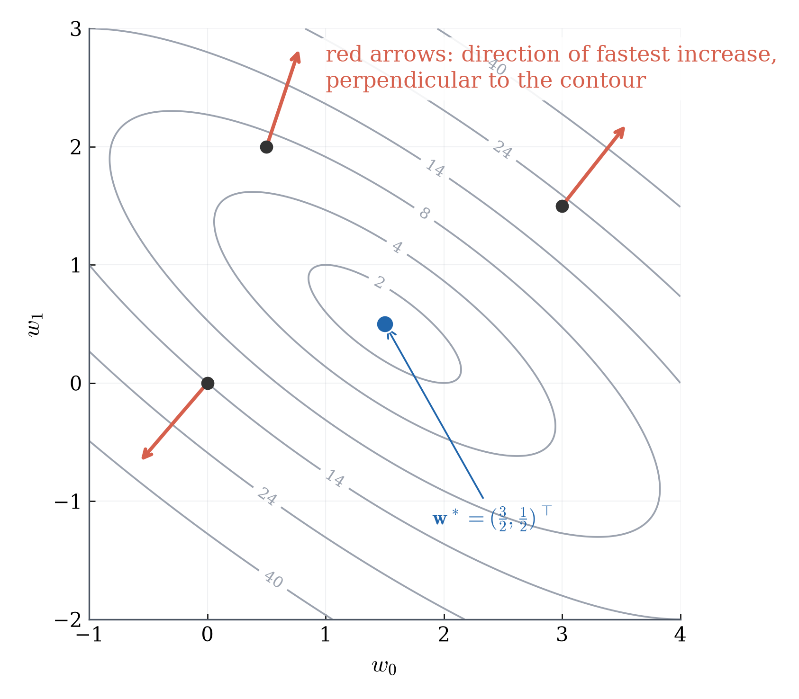
The error \(\mathrm{SSE}(w_0,w_1)=3w_0^2+6w_0w_1+5w_1^2-12w_0-14w_1+14\) is \(14\) at \((0,0)^\top\), \((4,0)^\top\) and \((3,1)^\top\), and along a whole curve through them. Draw such a curve for several error values, and the surface becomes a hiking map seen from directly above.
Definition (MML §7.1, p.228, under the name contour lines). For a number \(c\), the contour of \(\mathrm{SSE}\) at level \(c\) is the set of all parameter points \(\mathbf w\) with \(\mathrm{SSE}(\mathbf w)=c\). [MASTER]
In the figure, each grey curve is one contour, labelled by its level: \(2,\ 4,\ 8,\ 14,\ 24,\ 40\).
Check \((3,1)^\top\) is on level \(14\), with the polynomial: \(27+18+5-36-14+14=14\) ✓.
The levels shrink toward the blue point \(\mathbf w^\ast=(\tfrac32,\tfrac12)^\top\), where \(\mathrm{SSE}=\tfrac32\) (L10), smaller than every level drawn.
“Can two contours cross?” No: a crossing point would have two different errors, but \(\mathrm{SSE}\) gives each point one number.
For training: along a contour, no progress; going down means crossing toward smaller levels. (The red arrows: the gradient, later in this lecture.)
A partial derivative only walks along an axis
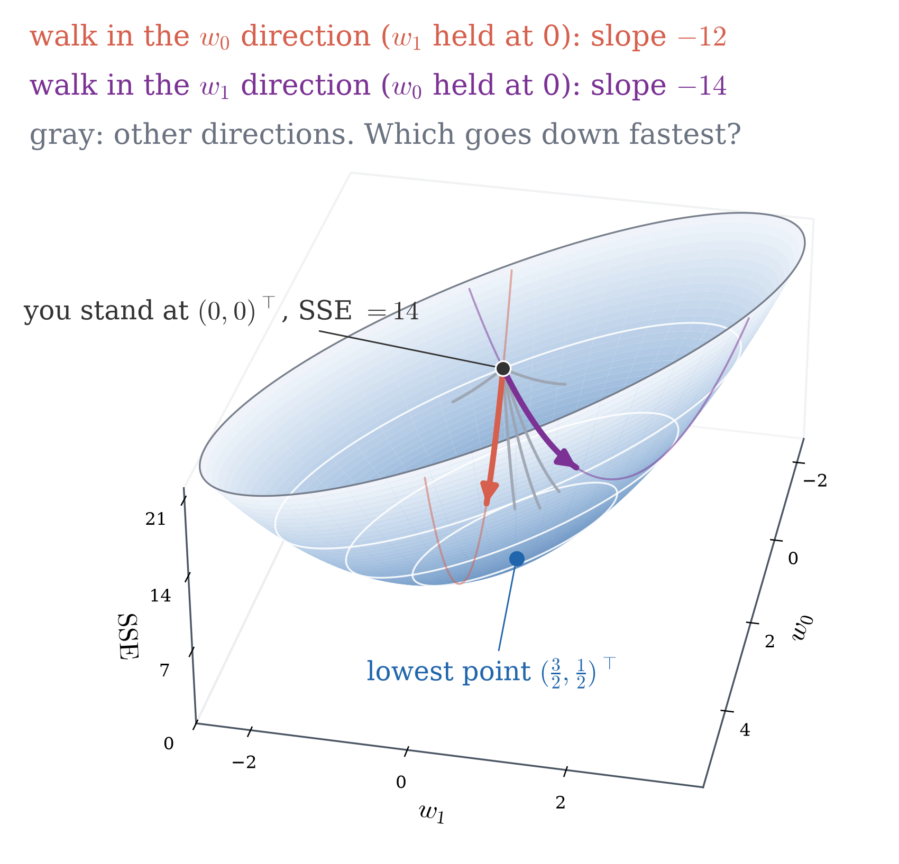
Our error is \(\mathrm{SSE}(w_0,w_1)=3w_0^2+6w_0w_1+5w_1^2-12w_0-14w_1+14\). L09’s two partial derivatives of \(\mathrm{SSE}\) (each one: differentiate with the other parameter held fixed):
At \(\mathbf w=(0,0)^\top\): \(\partial\,\mathrm{SSE}/\partial w_0=6\cdot0+6\cdot0-12=-12\) and \(\partial\,\mathrm{SSE}/\partial w_1=6\cdot0+10\cdot0-14=-14\).
From \((0,0)^\top\), walking in the \(w_0\) direction (keep \(w_1=0\)) the error starts falling at \(12\) per unit step; in the \(w_1\) direction (keep \(w_0=0\)), at \(14\).
The \(w_0\) direction and the \(w_1\) direction are only two directions out of infinitely many. A trainer changes both parameters at once, and wants the fastest way down.
Take a unit direction \(\mathbf u=(u_0,u_1)^\top\) and step a distance \(h\) in the direction \(\mathbf u\). How fast does the error change? And which \(\mathbf u\) changes the error fastest?
Pick a direction, and the surface becomes a curve
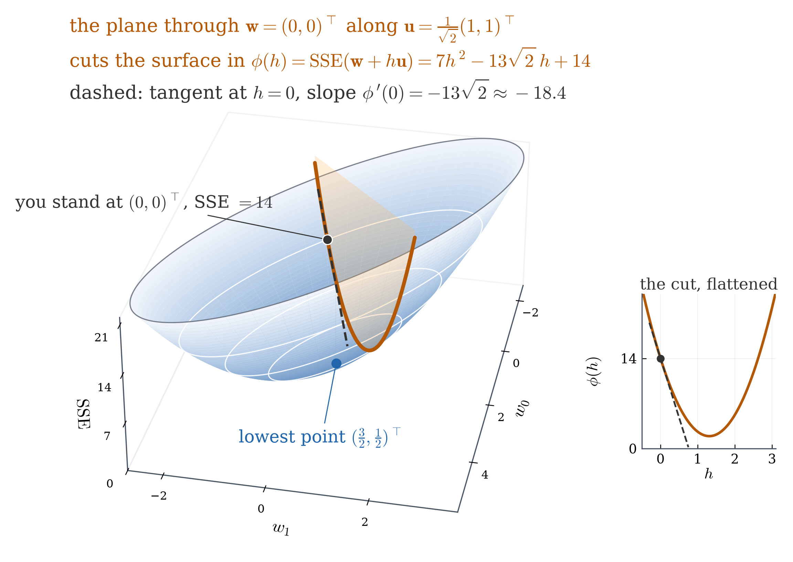
A direction is a column \(\mathbf u=(u_0,u_1)^\top\) with \(\norm{\mathbf u}=1\). Length \(1\) so that \(h\) is the distance walked: \(\norm{h\mathbf u}=|h|\,\norm{\mathbf u}=|h|\).
The straight line through \(\mathbf w\) in the direction \(\mathbf u\) is the set of points \(\mathbf w+h\mathbf u\), one point for each number \(h\).
Along that line the error depends on the single number \(h\): \(\;\phi(h)=\mathrm{SSE}(\mathbf w+h\mathbf u)\), and \(\phi(0)=\mathrm{SSE}(\mathbf w)\) is where we stand.
Our example: \(\mathbf w=(0,0)^\top\) and \(\mathbf u=\tfrac{1}{\sqrt2}(1,1)^\top\), on the error \(\mathrm{SSE}(w_0,w_1)=3w_0^2+6w_0w_1+5w_1^2-12w_0-14w_1+14\). Length check: \(\norm{\mathbf u}^2=\big(\tfrac1{\sqrt2}\big)^2+\big(\tfrac1{\sqrt2}\big)^2=\tfrac12+\tfrac12=1\) ✓.
Points on the line through \((0,0)^\top\) in the direction \(\tfrac{1}{\sqrt2}(1,1)^\top\): \(\mathbf w+h\mathbf u=\big(\tfrac{h}{\sqrt2},\tfrac{h}{\sqrt2}\big)^\top\), that is \(w_0=w_1=\tfrac{h}{\sqrt2}\): raise both parameters by the same amount.
Substitute into \(\mathrm{SSE}\), one term at a time
Put \(w_0=w_1=\tfrac{h}{\sqrt2}\) into \(\mathrm{SSE}=3w_0^2+6w_0w_1+5w_1^2-12w_0-14w_1+14\). Two facts used: \(\big(\tfrac{h}{\sqrt2}\big)^2=\tfrac{h^2}{2}\), and \(\tfrac{12}{\sqrt2}=\tfrac{12\sqrt2}{2}=6\sqrt2\) (multiply top and bottom by \(\sqrt2\)).
Check at \(h=0\): \(\phi(0)=14\), and directly \(\mathrm{SSE}(0,0)=(1-0)^2+(3-0)^2+(2-0)^2=1+9+4=14\) ✓.
Differentiate \(\phi(h)=7h^2-13\sqrt2\,h+14\), then set \(h=0\)
From the substitution into \(\mathrm{SSE}=3w_0^2+6w_0w_1+5w_1^2-12w_0-14w_1+14\) along \(w_0=w_1=\tfrac{h}{\sqrt2}\): \(\;\phi(h)=7h^2-13\sqrt2\,h+14\).
Term by term, Calculus 1: \(\tfrac{d}{dh}\big(7h^2\big)=14h\), \(\;\tfrac{d}{dh}\big(-13\sqrt2\,h\big)=-13\sqrt2\), \(\;\tfrac{d}{dh}\,14=0\).
So \(\phi'(h)=14h-13\sqrt2\), and at \(h=0\): \(\;\phi'(0)=-13\sqrt2\approx-13\times1.41421\approx-18.385\).
Meaning: starting at \((0,0)^\top\) in the direction \(\tfrac1{\sqrt2}(1,1)^\top\), the error falls at about \(18.385\) per unit distance.
direction from \((0,0)^\top\)
\(w_0\) axis
\(w_1\) axis
\(\tfrac1{\sqrt2}(1,1)^\top\)
rate of change of the error
\(\partial\mathrm{SSE}/\partial w_0=6w_0+6w_1-12\); at \((0,0)^\top\): \(-12\)
\(\partial\mathrm{SSE}/\partial w_1=6w_0+10w_1-14\); at \((0,0)^\top\): \(-14\)
\(\phi'(0)\approx-18.385\), steeper than either axis
Actual: \(\phi(0.1)=7(0.1)^2-13\sqrt2\,(0.1)+14=0.07-1.8385+14=12.2315\). Close, not equal: the gap \(12.2315-12.1615=0.07\) is the \(7h^2\) term.
No new calculus was used: restrict the surface to a line, and differentiate the way you already know how.
Name the slope: the directional derivative
The error: \(\mathrm{SSE}(w_0,w_1)=3w_0^2+6w_0w_1+5w_1^2-12w_0-14w_1+14\).
Definition (Stewart, Calculus, §14.6; MML has no numbered definition). The directional derivative of \(g\) at \(\mathbf w\) in the unit direction \(\mathbf u\) is \(\;D_{\mathbf u}g=\phi'(0)\), where \(\phi(h)=g(\mathbf w+h\mathbf u)\). [MASTER]
direction \(\mathbf u\) from \((0,0)^\top\)
\(\phi(h)\): put \(w_0=hu_0,\ w_1=hu_1\) into \(\mathrm{SSE}\)
\(D_{\mathbf u}\mathrm{SSE}=\phi'(0)\)
\((1,0)^\top\), the \(w_0\) axis
\(3h^2-12h+14\)
\(-12\), which is \(\partial\,\mathrm{SSE}/\partial w_0\)
\((0,1)^\top\), the \(w_1\) axis
\(5h^2-14h+14\)
\(-14\), which is \(\partial\,\mathrm{SSE}/\partial w_1\)
\(\tfrac1{\sqrt2}(1,1)^\top\)
\(7h^2-13\sqrt2\,h+14\)
\(-13\sqrt2\approx-18.385\)
\(-\tfrac1{\sqrt2}(1,1)^\top\), the way back
\(7h^2+13\sqrt2\,h+14\)
\(+13\sqrt2\)
Along an axis, the directional derivative is the partial derivative. Turning around flips the sign.
The diagonal: \(-13\sqrt2=-\tfrac{26}{\sqrt2}=(-12)\cdot\tfrac1{\sqrt2}+(-14)\cdot\tfrac1{\sqrt2}\), each axis slope weighted by the matching entry of \(\mathbf u\).
If “axis slopes weighted by the entries of \(\mathbf u\)” holds for every \(\mathbf u\), two numbers give the slope in all infinitely many directions — no more substituting.
The slope in every direction, from the two partial derivatives
Formula. If \(g\) is differentiable at \(\mathbf w\), then for every unit direction \(\mathbf u=(u_0,u_1)^\top\), with the partial derivatives taken at \(\mathbf w\): \(\;D_{\mathbf u}g=u_0\,\partial g/\partial w_0+u_1\,\partial g/\partial w_1=\begin{bmatrix}\partial g/\partial w_0&\partial g/\partial w_1\end{bmatrix}\mathbf u\). [MASTER]
Proof for our \(\mathrm{SSE}\) (its terms are the first column below): \(\phi(h)=\mathrm{SSE}(w_0+hu_0,\,w_1+hu_1)=ah^2+bh+c\), so \(\phi'(0)=b\), the coefficient of \(h\):
term
after \(w_0\to w_0+hu_0\), \(w_1\to w_1+hu_1\)
coefficient of \(h\)
\(3w_0^2\)
\(3w_0^2+6w_0u_0\,h+3u_0^2h^2\)
\(6w_0u_0\)
\(6w_0w_1\)
\(6w_0w_1+(6w_0u_1+6w_1u_0)\,h+6u_0u_1h^2\)
\(6w_0u_1+6w_1u_0\)
\(5w_1^2\)
\(5w_1^2+10w_1u_1\,h+5u_1^2h^2\)
\(10w_1u_1\)
\(-12w_0-14w_1+14\)
\((-12w_0-14w_1+14)+(-12u_0-14u_1)\,h\)
\(-12u_0-14u_1\)
Add the last column, grouped by \(u_0\) and \(u_1\): \(\;\phi'(0)=u_0\,(6w_0+6w_1-12)+u_1\,(6w_0+10w_1-14)\): the brackets are L09’s \(\partial\,\mathrm{SSE}/\partial w_0\) and \(\partial\,\mathrm{SSE}/\partial w_1\). At \((0,0)^\top\) this is \(\begin{bmatrix}-12&-14\end{bmatrix}\mathbf u\), and \(\mathbf u=\tfrac1{\sqrt2}(1,1)^\top\) gives \(-13\sqrt2\) ✓.
⚠️ A general \(g\) must be differentiable (continuous partial derivatives suffice; the polynomial \(\mathrm{SSE}\) is). General proof: L14’s matrix chain rule, stated, not proved.
One row answers every direction: name it the gradient
Definition (MML eq. (5.40), p.146). For \(g(\mathbf w)\) with \(\mathbf w\in\R^d\), the gradient is the row vector of partial derivatives
\[\nabla g=\frac{d\,g}{d\mathbf w}=\begin{bmatrix}\dfrac{\partial g}{\partial w_0}&\cdots&\dfrac{\partial g}{\partial w_{d-1}}\end{bmatrix}\in\R^{1\times d},
\qquad\text{so}\qquad D_{\mathbf u}g=\nabla g\,\mathbf u .\]
[MASTER]
Every directional slope at \(\mathbf w\) is the same row \(\nabla g\) times a different column \(\mathbf u\). Shapes: \((1\times d)(d\times1)=1\times1\), one number.
Why a row? For a function with one output the derivative is naturally one row: in L14 the gradient turns out to be the Jacobian of a one-output function, and the chain rule becomes a plain matrix product (MML eq. (5.40), p.146; Remark “Gradient as a Row Vector”, p.147).
⚠️ Mind the transpose. The gradient is a row; a direction to walk in is a column. The row \(\nabla g\) and the column \((\nabla g)^\top\) differ by a transpose, and this course writes the transpose out every time.
Our error, \(d=2\): \(\mathrm{SSE}(w_0,w_1)=3w_0^2+6w_0w_1+5w_1^2-12w_0-14w_1+14\), with \(\partial\mathrm{SSE}/\partial w_0=6w_0+6w_1-12\) and \(\partial\mathrm{SSE}/\partial w_1=6w_0+10w_1-14\), so \(\;\nabla\mathrm{SSE}=\begin{bmatrix}6w_0+6w_1-12&6w_0+10w_1-14\end{bmatrix}\).
The gradient of SSE as one row: \(\nabla\mathrm{SSE}=-2\,\mathbf r^\top X\)
Data \(\mathbf y=(1,3,2)^\top\); \(X\) has columns \(\mathbf 1=(1,1,1)^\top\) and \(\mathbf t=(0,1,2)^\top\); residual \(\mathbf r=\mathbf y-X\mathbf w\). In L09 each partial derivative of \(\mathrm{SSE}\) came out as \(-2\times\)(its column of \(X\))\(^\top\mathbf r\):
Put them in a row (the gradient, MML (5.40)): \(\;\nabla\mathrm{SSE}=\begin{bmatrix}-2\,\mathbf 1^\top\mathbf r&-2\,\mathbf t^\top\mathbf r\end{bmatrix}=-2\begin{bmatrix}\mathbf 1^\top\mathbf r&\mathbf t^\top\mathbf r\end{bmatrix}\).
That row is \(\mathbf r^\top X\): a row times a matrix is the row times each column, \(\mathbf r^\top X=\begin{bmatrix}\mathbf r^\top\mathbf 1&\mathbf r^\top\mathbf t\end{bmatrix}\), and \(\mathbf r^\top\mathbf 1=\mathbf 1^\top\mathbf r\), \(\mathbf r^\top\mathbf t=\mathbf t^\top\mathbf r\) (the order of a dot product does not matter). Shapes: \((1\times3)(3\times2)=1\times2\). So \(\nabla\mathrm{SSE}=-2\,\mathbf r^\top X\).
Here the row was built from L09’s two partial derivatives, one at a time. L12 proves \(\nabla\mathrm{SSE}=-2\,\mathbf r^\top X\) for any number of features.
The gradient at three points, and the red arrows
From \(\mathrm{SSE}(w_0,w_1)=3w_0^2+6w_0w_1+5w_1^2-12w_0-14w_1+14\): \(\;\nabla\mathrm{SSE}=\begin{bmatrix}6w_0+6w_1-12&6w_0+10w_1-14\end{bmatrix}\), evaluated entry by entry:
\(\mathbf w\)
first entry
second entry
\((0,0)^\top\)
\(0+0-12=-12\)
\(0+0-14=-14\)
\((\tfrac12,2)^\top\)
\(3+12-12=3\)
\(3+20-14=9\)
\((\tfrac32,\tfrac12)^\top\)
\(9+3-12=0\)
\(9+5-14=0\)
So \(\nabla\mathrm{SSE}(0,0)=\begin{bmatrix}-12&-14\end{bmatrix}\), \(\;\nabla\mathrm{SSE}(\tfrac12,2)=\begin{bmatrix}3&9\end{bmatrix}\), \(\;\nabla\mathrm{SSE}(\tfrac32,\tfrac12)=\begin{bmatrix}0&0\end{bmatrix}\).
\((\tfrac12,2)^\top\) is a black dot in the figure. The red arrow at that dot points along the column \((3,9)^\top\): \(3\) right, \(9\) up.
At \((0,0)^\top\) the red arrow points along \((-12,-14)^\top\): down and to the left.
At \(\mathbf w^\ast=(\tfrac32,\tfrac12)^\top\) both entries are \(0\): the flat point of L09, where no red arrow is drawn.
Before any proof: walk a distance \(1\) from \((0,0)^\top\) in three directions
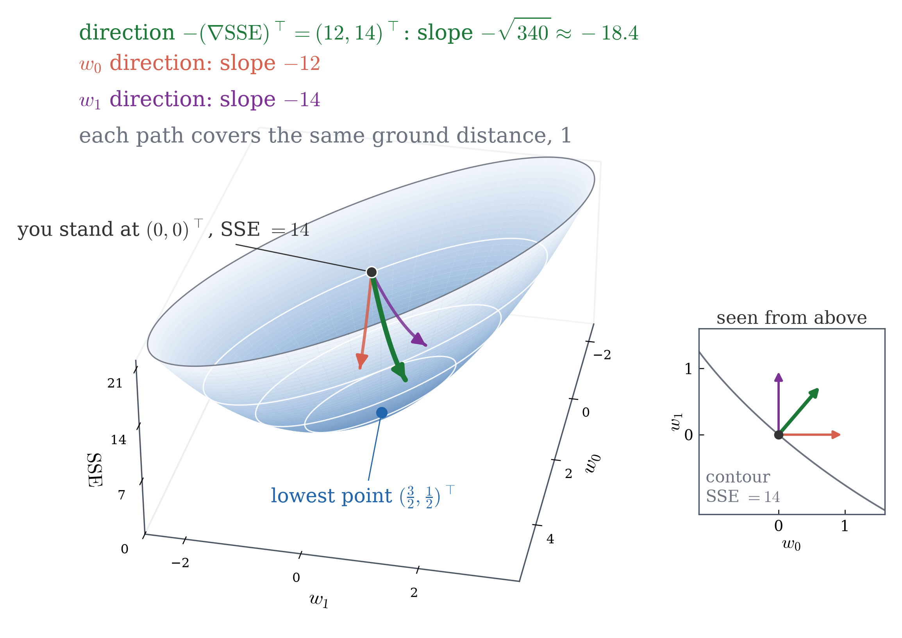
The error \(\mathrm{SSE}=3w_0^2+6w_0w_1+5w_1^2-12w_0-14w_1+14\) is \(14\) at \((0,0)^\top\), where \(\nabla\mathrm{SSE}=\begin{bmatrix}-12&-14\end{bmatrix}\).
Walk a ground distance of \(1\) (the three arrows): along \(w_0\) to \((1,0)^\top\), \(\mathrm{SSE}=3-12+14=5\); along \(w_1\) to \((0,1)^\top\), \(\mathrm{SSE}=5-14+14=5\); along the gradient’s entries with their signs flipped, \(-(\nabla\mathrm{SSE})^\top=(12,14)^\top\), to \(\tfrac{(12,14)^\top}{\sqrt{340}}\approx(0.651,0.759)^\top\): \(\mathrm{SSE}\approx2.68\), far lower.
⚠️ What this comparison is and is not. Three finite steps on our data, nothing more. What the next two slides prove is about the slope at the point where we stand, not about where a step of length \(1\) lands.
Seen from above (inset): \((12,14)^\top\) crosses the contour \(\mathrm{SSE}=14\) at a right angle.
The diagonal \(\mathbf u=\tfrac1{\sqrt2}(1,1)^\top\) has slope \(\begin{bmatrix}-12&-14\end{bmatrix}\mathbf u=\tfrac{-26}{\sqrt2}=-13\sqrt2\approx-18.38\): only \(4.4^\circ\) away from \((12,14)^\top\), and slightly less steep than \(-\sqrt{340}\approx-18.44\).
Coincidence of our numbers, or does \(-(\nabla g)^\top\) always point the fastest way down?
Which direction is steepest? One step at a time
Assume \(\nabla g\neq\mathbf 0\) at \(\mathbf w\), and let \(\theta\) be the angle between the column \((\nabla g)^\top\) and the unit direction \(\mathbf u\).
Step 1. \(D_{\mathbf u}g=\nabla g\,\mathbf u=\big((\nabla g)^\top\big)^\top\mathbf u\): the dot product of the two columns \((\nabla g)^\top\) and \(\mathbf u\).
Step 2. L01’s cosine formula, \(\cos\theta=\dfrac{\mathbf x^\top\mathbf y}{\norm{\mathbf x}\,\norm{\mathbf y}}\), multiplied out: \(\;\mathbf x^\top\mathbf y=\norm{\mathbf x}\,\norm{\mathbf y}\cos\theta\). The cosine formula needs both vectors nonzero: \(\mathbf u\) has length \(1\), and that is why we assumed \(\nabla g\neq\mathbf 0\).
Step 3. Take \(\mathbf x=(\nabla g)^\top\), \(\mathbf y=\mathbf u\), and use \(\norm{\mathbf u}=1\):
\[D_{\mathbf u}g=\norm{(\nabla g)^\top}\cos\theta .\]
Step 4. \(-1\le\cos\theta\le1\), so \(\;-\norm{(\nabla g)^\top}\le D_{\mathbf u}g\le\norm{(\nabla g)^\top}\).
Our numbers at \((0,0)^\top\): \(\nabla\mathrm{SSE}=\begin{bmatrix}6w_0+6w_1-12&6w_0+10w_1-14\end{bmatrix}\) gives \(\begin{bmatrix}-12&-14\end{bmatrix}\), so \(\norm{(\nabla\mathrm{SSE})^\top}=\sqrt{(-12)^2+(-14)^2}=\sqrt{144+196}=\sqrt{340}\approx18.439\). So every directional slope at \((0,0)^\top\) lies between \(-18.439\) and \(18.439\).
The slope along \(\tfrac1{\sqrt2}(1,1)^\top\), \(-13\sqrt2\approx-18.385\), fits: \(\cos\theta=\tfrac{-18.385}{18.439}\approx-0.997\), almost the lowest possible value.
Three angles, three answers
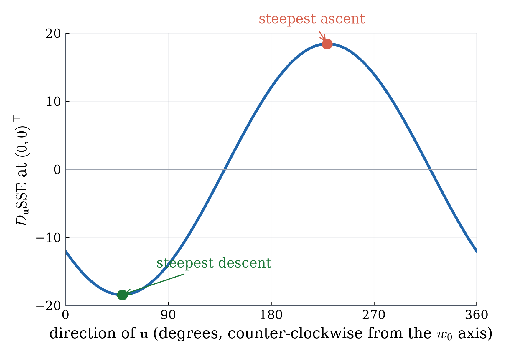
From \(D_{\mathbf u}g=\norm{(\nabla g)^\top}\cos\theta\), if \(\nabla g\neq\mathbf 0\):
\(\theta=0\): \(\cos\theta=1\), the largest slope \(+\norm{(\nabla g)^\top}\). \(\mathbf u\) points along \((\nabla g)^\top\): steepest ascent.
\(\theta=180^\circ\): \(\cos\theta=-1\), the smallest slope \(-\norm{(\nabla g)^\top}\). \(\mathbf u\) points along \(-(\nabla g)^\top\): steepest descent (MML §7.1, p.228). [MASTER]
\(\theta=90^\circ\): \(\cos\theta=0\), slope \(0\). \(\mathbf u\) is orthogonal to \((\nabla g)^\top\).
The direction tangent to the contour through \(\mathbf w\) has directional derivative \(0\): to first order, a small step that way does not change the error. (Following the curved contour itself keeps the error exactly constant.) In the plane only two unit directions have slope \(0\): the two orthogonal to \((\nabla g)^\top\). So the two directions tangent to the contour are these two orthogonal directions, and the direction \((\nabla g)^\top\) is orthogonal to the contour. [MASTER]
If instead \(\nabla g=\mathbf 0\) — a flat point — then \(\nabla g\,\mathbf u=0\) for every \(\mathbf u\): every direction has slope \(0\).
The figure: at \((0,0)^\top\), \(D_{\mathbf u}\mathrm{SSE}=-12\cos\alpha-14\sin\alpha\) for \(\mathbf u=(\cos\alpha,\sin\alpha)^\top\): lowest \(-18.439=-\sqrt{340}\) near \(\alpha=49.4^\circ\), the direction \((0.651,0.759)^\top\) found by walking; highest \(+18.439\) near \(229.4^\circ\).
Does the fastest way down point straight at \(\mathbf w^\ast\)?
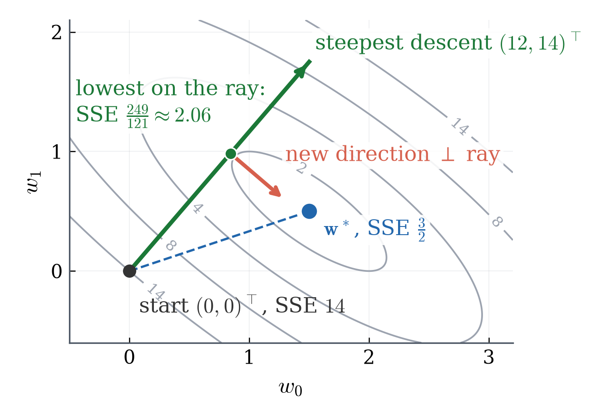
\(\mathrm{SSE}=3w_0^2+6w_0w_1+5w_1^2-12w_0-14w_1+14\), \(\nabla\mathrm{SSE}=\begin{bmatrix}6w_0+6w_1-12&6w_0+10w_1-14\end{bmatrix}\); at \((0,0)^\top\), \(-(\nabla\mathrm{SSE})^\top=(12,14)^\top=2\,(6,7)^\top\).
Walk straight along it: \(\mathbf w=s\,(6,7)^\top\), \(s\ge0\). Put \(w_0=6s\), \(w_1=7s\) into \(\mathrm{SSE}\): \(605s^2-170s+14\) (\(3\cdot36+6\cdot42+5\cdot49=605\), \(12\cdot6+14\cdot7=170\)).
Lowest on this line: \(1210s-170=0\), \(s=\tfrac{17}{121}\), at \(\left(\tfrac{102}{121},\tfrac{119}{121}\right)^\top\approx(0.843,\,0.983)^\top\), error \(\tfrac{249}{121}\approx2.06\), above \(\mathrm{SSE}(\mathbf w^\ast)=\tfrac32\).
\(\mathbf w^\ast=\left(\tfrac32,\tfrac12\right)^\top\) is not on the line: on the line \(w_1/w_0=\tfrac76\), at \(\mathbf w^\ast\) it is \(\tfrac13\). The fastest way down does not point at the bottom.
At \(\left(\tfrac{102}{121},\tfrac{119}{121}\right)^\top\): \(\nabla\mathrm{SSE}=\left[-\tfrac{126}{121}\ \ \tfrac{108}{121}\right]\), so the new fastest way down is \(\tfrac{18}{121}(7,-6)^\top\), at a right angle to \((6,7)^\top\): \(6\cdot7+7\cdot(-6)=0\).
Steepest descent is best only where you stand, so training repeats: step along \(-(\nabla f)^\top\), recompute, step again. That loop is gradient descent, \(\mathbf w_{i+1}=\mathbf w_i-\gamma_i\big(\nabla f(\mathbf w_i)\big)^\top\) (MML (7.6), p.228). How far to step: Unit 5.
L11 takeaways
Contour at level \(c\): all \(\mathbf w\) with \(\mathrm{SSE}(\mathbf w)=c\) (MML §7.1, p.228). Level \(14\) passes through \((0,0)^\top\), \((4,0)^\top\), \((3,1)^\top\). [MASTER]
Directional derivative: \(D_{\mathbf u}g=\phi'(0)\) with \(\phi(h)=g(\mathbf w+h\mathbf u)\); for differentiable \(g\), \(D_{\mathbf u}g=\nabla g\,\mathbf u\), one row times one column. At \((0,0)^\top\) along \(\tfrac1{\sqrt2}(1,1)^\top\): \(-13\sqrt2\). [MASTER]
Gradient: the row of partial derivatives (MML (5.40)). The gradient is not just a list: \(\nabla g\,\mathbf u\) gives the slope in every direction \(\mathbf u\). For SSE, from L09’s two partial derivatives: \(\nabla\mathrm{SSE}=-2\begin{bmatrix}\mathbf 1^\top\mathbf r&\mathbf t^\top\mathbf r\end{bmatrix}=-2\,\mathbf r^\top X\); at \((0,0)^\top\), \(\begin{bmatrix}-12&-14\end{bmatrix}\). [MASTER]
If \(\nabla g\neq\mathbf 0\): steepest ascent along \((\nabla g)^\top\), steepest descent along \(-(\nabla g)^\top\), zero in the directions tangent to a contour. [MASTER]
From the all-zero model the fastest way down is \((0.651,0.759)^\top\): raise the baseline \(w_0\) and, a little faster, the per-hour \(w_1\). It does not point at \(\mathbf w^\ast\), so training repeats the step: gradient descent (MML (7.6), p.228). [UNDERSTAND]
Gradient = row, direction = column: one transpose apart, always written out. [MASTER]
Two partial derivatives, two entries. With \(50\) parameters there would be \(50\), and we are not writing \(50\) lines. L12: \(\nabla\mathrm{SSE}\) for any number of parameters, in one matrix line.
L12 — The Matrix Form
Reading: MML §5.5, p.158: equations (5.105) and (5.107) are the two rules of this lecture; (5.108) is its main result, in the book’s letters.
Why a new form: with \(50\) parameters, the expanded \(\mathrm{SSE}\) has \(50\) squares and \(\tfrac{50\cdot49}{2}=1225\) cross terms, \(1275\) quadratic terms in all. Nobody expands that. We want \(\nabla\mathrm{SSE}\) straight from \(\mathbf y\), \(X\) and \(\mathbf w\).
From the polynomial. The gradient of that \(\mathrm{SSE}\), the row of its two partial derivatives, is \(\begin{bmatrix}6w_0+6w_1-12&6w_0+10w_1-14\end{bmatrix}\). At \(\mathbf w=(0,0)^\top\):
\(\;\begin{bmatrix}6\cdot0+6\cdot0-12&6\cdot0+10\cdot0-14\end{bmatrix}=\begin{bmatrix}-12&-14\end{bmatrix}\).
From matrices only. At \(\mathbf w=(0,0)^\top\) every prediction is \(0\): \(X\mathbf w=(0,0,0)^\top\), so the residual is \(\mathbf r=\mathbf y-X\mathbf w=(1,3,2)^\top\).
Row \(\mathbf r^\top\) times the first column of \(X\): \(\;1\cdot1+3\cdot1+2\cdot1=6\).
Row \(\mathbf r^\top\) times the second column of \(X\): \(\;1\cdot0+3\cdot1+2\cdot2=0+3+4=7\).
So \(\mathbf r^\top X=\begin{bmatrix}6&7\end{bmatrix}\) and \(-2\,\mathbf r^\top X=\begin{bmatrix}-2\cdot6&-2\cdot7\end{bmatrix}=\begin{bmatrix}-12&-14\end{bmatrix}\). The same row as the polynomial’s gradient.
L11 assembled \(\nabla\mathrm{SSE}=-2\,\mathbf r^\top X\) from L09’s two partial derivatives, written out one at a time. Is it true for every dataset and any number of parameters, without writing out \(d\) partial derivatives? This lecture proves it, with two rules that differentiate with respect to the whole vector \(\mathbf w\).
Write the error as a product of two matrices
General sizes: \(n\) data points, \(d\) parameters. \(X\) is \(n\times d\), \(\mathbf w\) is \(d\times1\), \(\mathbf y\) is \(n\times1\). Ours: \(n=3\), \(d=2\).
The residual \(\mathbf r=\mathbf y-X\mathbf w\) is \(n\times1\), and a squared length is a vector dotted with itself: \(\;\mathrm{SSE}(\mathbf w)=\norm{\mathbf y-X\mathbf w}^2=(\mathbf y-X\mathbf w)^\top(\mathbf y-X\mathbf w)\).
Transpose the first factor, \(\mathbf y-X\mathbf w\). A transpose of a product reverses the order, \((X\mathbf w)^\top=\mathbf w^\top X^\top\), so \(\;(\mathbf y-X\mathbf w)^\top=\mathbf y^\top-\mathbf w^\top X^\top\).
Multiply \((\mathbf y^\top-\mathbf w^\top X^\top)(\mathbf y-X\mathbf w)\) out like \((a-b)(c-e)=ac-ae-bc+be\), keeping every product in its order (matrices do not commute):
\(\mathbf y^\top X\mathbf w\) and \(\mathbf w^\top X^\top\mathbf y\) are the same number
Multiplying out \((\mathbf y-X\mathbf w)^\top(\mathbf y-X\mathbf w)\) gave four products: \(\;\mathrm{SSE}(\mathbf w)=\mathbf y^\top\mathbf y-\mathbf y^\top X\mathbf w-\mathbf w^\top X^\top\mathbf y+\mathbf w^\top X^\top X\mathbf w\).
The two middle products, \(\mathbf y^\top X\mathbf w\) and \(\mathbf w^\top X^\top\mathbf y\), are \(1\times1\): each is a single number.
A transpose of a product reverses the order, \((ABC)^\top=C^\top B^\top A^\top\), so \(\;(\mathbf y^\top X\mathbf w)^\top=\mathbf w^\top X^\top(\mathbf y^\top)^\top=\mathbf w^\top X^\top\mathbf y\).
A \(1\times1\) matrix equals its own transpose, \([c]^\top=[c]\), so \(\;\mathbf y^\top X\mathbf w=(\mathbf y^\top X\mathbf w)^\top=\mathbf w^\top X^\top\mathbf y\).
On our data (\(\mathbf y=(1,3,2)^\top\), \(X\) with rows \((1,0),(1,1),(1,2)\)): \(\mathbf y^\top X=\begin{bmatrix}1+3+2&0+3+4\end{bmatrix}=\begin{bmatrix}6&7\end{bmatrix}\) and \(X^\top\mathbf y=(6,7)^\top\), so both products are \(6w_0+7w_1\) ✓.
So the middle terms of \(\mathrm{SSE}\) combine: \(\;-\mathbf y^\top X\mathbf w-\mathbf w^\top X^\top\mathbf y=-2\,\mathbf w^\top X^\top\mathbf y\).
\[\mathrm{SSE}(\mathbf w)=\underbrace{\mathbf w^\top X^\top X\mathbf w}_{\text{quadratic in }\mathbf w}\;-\;\underbrace{2\,\mathbf w^\top X^\top\mathbf y}_{\text{linear in }\mathbf w}\;+\;\underbrace{\mathbf y^\top\mathbf y}_{\text{no }\mathbf w}\]
[MASTER]
The three matrix pieces of SSE, on our data
The pieces of \(\;\mathrm{SSE}(\mathbf w)=\mathbf w^\top X^\top X\mathbf w-2\,\mathbf w^\top X^\top\mathbf y+\mathbf y^\top\mathbf y\), with \(\mathbf y=(1,3,2)^\top\) and \(X\) with columns \(\mathbf 1=(1,1,1)^\top\) (intercept) and \(\mathbf t=(0,1,2)^\top\) (hours). Entry \((j,k)\) of \(X^\top X\) is column \(j\) dotted with column \(k\):
So \(\;X^\top X=\begin{bmatrix}3&3\\3&5\end{bmatrix},\quad X^\top\mathbf y=\begin{bmatrix}6\\7\end{bmatrix},\quad \mathbf y^\top\mathbf y=14\).
\(X^\top X\) is symmetric for every \(X\): \((X^\top X)^\top=X^\top(X^\top)^\top=X^\top X\). Entries \((j,k)\) and \((k,j)\) are the same dot product taken in either order — here both are \(\mathbf 1^\top\mathbf t=3\).
Check: the matrix form of SSE expands to the polynomial
Quadratic piece, step 1. Matrix times column:
\(\;X^\top X\,\mathbf w=\begin{bmatrix}3&3\\3&5\end{bmatrix}\begin{bmatrix}w_0\\w_1\end{bmatrix}=\begin{bmatrix}3w_0+3w_1\\3w_0+5w_1\end{bmatrix}\).
Quadratic piece, step 2. Row \(\mathbf w^\top\) times the column \(X^\top X\mathbf w\) from step 1:
\[\begin{aligned}\mathbf w^\top X^\top X\mathbf w&=w_0(3w_0+3w_1)+w_1(3w_0+5w_1)\\&=3w_0^2+3w_0w_1+3w_0w_1+5w_1^2=3w_0^2+6w_0w_1+5w_1^2 .\end{aligned}\]
Linear piece. \(\mathbf w^\top X^\top\mathbf y=\begin{bmatrix}w_0&w_1\end{bmatrix}\begin{bmatrix}6\\7\end{bmatrix}=6w_0+7w_1\), so \(\;-2\,\mathbf w^\top X^\top\mathbf y=-12w_0-14w_1\).
Constant piece. \(\mathbf y^\top\mathbf y=14\).
Add the three pieces: \(\;3w_0^2+6w_0w_1+5w_1^2-12w_0-14w_1+14\) — exactly the polynomial L09 got by expanding \((1-w_0)^2+(3-w_0-w_1)^2+(2-w_0-2w_1)^2\) term by term ✓.
Notice where \(6w_0w_1\) came from: \(3w_0w_1+3w_0w_1\), one from each off-diagonal \(3\). The two \(3w_0w_1\) terms are equal because \(X^\top X\) is symmetric; Rule 2 will need that symmetry.
Two shapes to differentiate
Overall goal: prove \(\nabla\mathrm{SSE}=-2\,\mathbf r^\top X\) for any number of features.
What “differentiate with respect to the vector \(\mathbf w\)” means (L11, MML (5.40), p.146): \(\;\dfrac{\partial f}{\partial\mathbf w}=\nabla f=\begin{bmatrix}\dfrac{\partial f}{\partial w_0}&\cdots&\dfrac{\partial f}{\partial w_{d-1}}\end{bmatrix}\), the row of partial derivatives (MML also writes \(df/d\mathbf w\)). So every rule below is proved component by component: one partial derivative at a time, the other parameters held fixed.
In \(\;\mathrm{SSE}(\mathbf w)=\mathbf w^\top X^\top X\mathbf w-2\,\mathbf w^\top X^\top\mathbf y+\mathbf y^\top\mathbf y\;\) the middle term is a number, so it equals its transpose: \(\mathbf w^\top X^\top\mathbf y=(X^\top\mathbf y)^\top\mathbf w\). With \(\mathbf b=X^\top\mathbf y\), \(A=X^\top X\): \(\;\mathrm{SSE}(\mathbf w)=\mathbf w^\top A\mathbf w-2\,\mathbf b^\top\mathbf w+\mathbf y^\top\mathbf y\) — two shapes to differentiate, \(\mathbf b^\top\mathbf w\) and \(\mathbf w^\top A\mathbf w\).
\(\mathbf b^\top\mathbf w\) is linear in \(\mathbf w\): every term has one parameter. Rule 1 differentiates it.
\(\mathbf w^\top A\mathbf w\) is quadratic: every term has two parameters (or one, squared). Rule 2 differentiates it.
\(\mathbf y^\top\mathbf y\) has no \(\mathbf w\) in it, so its derivative is \(0\).
Rule 1: the derivative of a linear function
Overall goal: prove \(\nabla\mathrm{SSE}=-2\,\mathbf r^\top X\) for any number of features.
Look first: our \(\mathbf b=(6,7)^\top\): \(\mathbf b^\top\mathbf w=6w_0+7w_1\) has partial derivatives \(6\), \(7\): the row \(\begin{bmatrix}6&7\end{bmatrix}\), \(\mathbf b\) laid flat.
Rule 1 (MML (5.105), p.158). For a fixed column \(\mathbf b\in\R^d\): \(\;\dfrac{\partial(\mathbf b^\top\mathbf w)}{\partial\mathbf w}=\mathbf b^\top\). [MASTER]
Proof. Write out \(\mathbf b^\top\mathbf w\): \(\;\mathbf b^\top\mathbf w=b_0w_0+b_1w_1+\cdots+b_{d-1}w_{d-1}\).
Differentiate in \(w_j\), all other parameters held fixed: the term \(b_jw_j\) gives \(b_j\); every term \(b_kw_k\) with \(k\neq j\) is a constant and gives \(0\). So \(\partial(\mathbf b^\top\mathbf w)/\partial w_j=b_j\).
The gradient is the row of partial derivatives (MML (5.40)): \(\;\begin{bmatrix}b_0&b_1&\cdots&b_{d-1}\end{bmatrix}=\mathbf b^\top\).
On our \(\mathbf b=(6,7)^\top\): the piece \(-2\,\mathbf b^\top\mathbf w\) contributes \(-2\begin{bmatrix}6&7\end{bmatrix}=\begin{bmatrix}-12&-14\end{bmatrix}\): the constant terms of \(\partial\,\mathrm{SSE}/\partial w_0=6w_0+6w_1-12\) and \(\partial\,\mathrm{SSE}/\partial w_1=6w_0+10w_1-14\).
Rule 2: the statement, and multiplying out \(\mathbf w^\top A\mathbf w\)
Overall goal: prove \(\nabla\mathrm{SSE}=-2\,\mathbf r^\top X\) for any number of features.
Look first: L09’s partial derivatives of the quadratic part of our error, \(3w_0^2+6w_0w_1+5w_1^2=\mathbf w^\top X^\top X\mathbf w\), are \(\begin{bmatrix}6w_0+6w_1&6w_0+10w_1\end{bmatrix}=2\,\mathbf w^\top X^\top X\), with \(X^\top X=\left[\begin{smallmatrix}3&3\\3&5\end{smallmatrix}\right]\) symmetric.
Rule 2 (MML (5.107), p.158: for any square \(B\) the derivative of \(\mathbf w^\top B\mathbf w\) is \(\mathbf w^\top(B+B^\top)\); here \(B\) is symmetric). For a symmetric \(d\times d\) matrix \(A\) (that is, \(A^\top=A\)): \(\;\dfrac{\partial(\mathbf w^\top A\mathbf w)}{\partial\mathbf w}=2\,\mathbf w^\top A\). [MASTER]
Proof for two parameters, step 1: multiply out. Take \(A=\left[\begin{smallmatrix}\alpha&\beta\\\beta&\gamma\end{smallmatrix}\right]\) (symmetric: the same \(\beta\) twice), \(\mathbf w=(w_0,w_1)^\top\).
Matrix times column: \(\;A\mathbf w=\begin{bmatrix}\alpha w_0+\beta w_1\\\beta w_0+\gamma w_1\end{bmatrix}\). Then row \(\mathbf w^\top\) times the column \(A\mathbf w\):
\[\begin{aligned}\mathbf w^\top A\mathbf w&=w_0(\alpha w_0+\beta w_1)+w_1(\beta w_0+\gamma w_1)\\&=\alpha w_0^2+\beta w_0w_1+\beta w_0w_1+\gamma w_1^2=\alpha w_0^2+2\beta\,w_0w_1+\gamma w_1^2 .\end{aligned}\]
One \(\beta w_0w_1\) came from the row \(\mathbf w^\top\) on the left of \(A\), the other from the column \(\mathbf w\) on its right.
Rule 2, step 2: differentiate one parameter at a time
Goal: \(\partial(\mathbf w^\top A\mathbf w)/\partial\mathbf w=2\,\mathbf w^\top A\) for \(A=\left[\begin{smallmatrix}\alpha&\beta\\\beta&\gamma\end{smallmatrix}\right]\). Step 1 gave \(\;\mathbf w^\top A\mathbf w=\alpha w_0^2+2\beta\,w_0w_1+\gamma w_1^2\). Differentiate each of its three terms, holding the other parameter fixed:
\(\alpha w_0^2\)
\(2\beta\,w_0w_1\)
\(\gamma w_1^2\)
Sum
\(\partial/\partial w_0\)
\(2\alpha w_0\)
\(2\beta w_1\)
\(0\)
\(2\alpha w_0+2\beta w_1\)
\(\partial/\partial w_1\)
\(0\)
\(2\beta w_0\)
\(2\gamma w_1\)
\(2\beta w_0+2\gamma w_1\)
Now compute \(2\,\mathbf w^\top A\), row times each column of \(A\):
\(\;\mathbf w^\top A=\begin{bmatrix}w_0&w_1\end{bmatrix}\begin{bmatrix}\alpha&\beta\\\beta&\gamma\end{bmatrix}=\begin{bmatrix}\alpha w_0+\beta w_1&\beta w_0+\gamma w_1\end{bmatrix}\).
Times \(2\): \(\;2\,\mathbf w^\top A=\begin{bmatrix}2\alpha w_0+2\beta w_1&2\beta w_0+2\gamma w_1\end{bmatrix}\) — the row of the two sums in the table ✓.
Where the \(2\) comes from: \(\mathbf w\) appears on both sides of \(A\). Varying the column \(\mathbf w\) on the right gives \(\mathbf w^\top A\); varying the row \(\mathbf w^\top\) on the left gives \(\mathbf w^\top A^\top\). Symmetry makes \(A^\top=A\), so \(\mathbf w^\top A+\mathbf w^\top A^\top=2\,\mathbf w^\top A\). (For \(d\) parameters: the same computation, longer; MML (5.107).)
Both rules on our error \(\mathrm{SSE}=\mathbf w^\top A\mathbf w-2\,\mathbf b^\top\mathbf w+14\), \(A=\left[\begin{smallmatrix}3&3\\3&5\end{smallmatrix}\right]\), \(\mathbf b=(6,7)^\top\): \(\;2\,\mathbf w^\top A-2\,\mathbf b^\top=\begin{bmatrix}6w_0+6w_1-12&6w_0+10w_1-14\end{bmatrix}\), L09’s two partial derivatives ✓.
\[\begin{aligned}
\nabla\mathrm{SSE}&=\frac{\partial(\mathbf w^\top A\mathbf w)}{\partial\mathbf w}-2\,\frac{\partial(\mathbf b^\top\mathbf w)}{\partial\mathbf w}+\frac{\partial(\mathbf y^\top\mathbf y)}{\partial\mathbf w}&&\text{a sum is differentiated piece by piece}\\
&=2\,\mathbf w^\top A-2\,\mathbf b^\top+\mathbf 0^\top&&\text{Rule 2, Rule 1, and }\mathbf y^\top\mathbf y\text{ has no }\mathbf w\\
&=2\,\mathbf w^\top X^\top X-2\,\mathbf y^\top X&&A=X^\top X,\ \ \mathbf b^\top=(X^\top\mathbf y)^\top=\mathbf y^\top X\\
&=-2\,\big(\mathbf y^\top-\mathbf w^\top X^\top\big)X&&\text{factor out }-2\text{, and }X\text{ on the right}\\
&=-2\,(\mathbf y-X\mathbf w)^\top X=-2\,\mathbf r^\top X&&(\mathbf y-X\mathbf w)^\top=\mathbf y^\top-\mathbf w^\top X^\top
\end{aligned}\]
Shapes. \(\mathbf w^\top X^\top X\): \((1\times d)(d\times d)=1\times d\). \(\;\mathbf y^\top X\) and \(\mathbf r^\top X\): \((1\times n)(n\times d)=1\times d\). Every line is a row of \(d\) numbers, as a gradient must be (MML (5.40)). Ours: \((1\times3)(3\times2)=1\times2\).
Entry by entry: \(\partial\,\mathrm{SSE}/\partial w_j=-2\times(\text{the column of }X\text{ that multiplies }w_j)^\top\mathbf r\), the shape L09 found one column at a time. Ours, columns \(\mathbf 1=(1,1,1)^\top\) and \(\mathbf t=(0,1,2)^\top\): \(\;\partial\,\mathrm{SSE}/\partial w_0=-2\,\mathbf 1^\top\mathbf r=-2(r_1+r_2+r_3)\) and \(\;\partial\,\mathrm{SSE}/\partial w_1=-2\,\mathbf t^\top\mathbf r=-2(0\cdot r_1+1\cdot r_2+2\cdot r_3)\).
MML (5.108): \(\frac{\partial}{\partial\mathbf s}(\mathbf x-A\mathbf s)^\top W(\mathbf x-A\mathbf s)=-2(\mathbf x-A\mathbf s)^\top WA\) for symmetric \(W\). With \(W=I\) and the book’s \(\mathbf x,A,\mathbf s\) read as our \(\mathbf y,X,\mathbf w\), it says \(\nabla\mathrm{SSE}=-2(\mathbf y-X\mathbf w)^\top X\).
\(\nabla\mathrm{SSE}=-2\,\mathbf r^\top X\): SSE versus MSE, and where the minus sign comes from
\[\boxed{\;\nabla\mathrm{SSE}=-2\,\mathbf r^\top X\;}\qquad\text{a }1\times d\text{ row, for any number of features.}\]
[MASTER]
SSE or MSE? Most machine-learning software reports \(\mathrm{MSE}=\mathrm{SSE}/n\). Dividing a function by \(n\) divides its gradient by \(n\): \(\;\nabla\mathrm{MSE}=-\tfrac2n\,\mathbf r^\top X\), the row \(-2\,\mathbf r^\top X\) divided by \(n\). At \((0,0)^\top\), where \(\mathbf r=\mathbf y=(1,3,2)^\top\) and \(-2\,\mathbf r^\top X=\begin{bmatrix}-12&-14\end{bmatrix}\), with \(n=3\): \(\;\nabla\mathrm{MSE}=\begin{bmatrix}-12&-14\end{bmatrix}/3=\begin{bmatrix}-4&-\tfrac{14}{3}\end{bmatrix}\). MSE and SSE are flat at the same \(\mathbf w\).
The minus sign. The residual is data minus prediction, \(r_i=y_i-\hat y_i\), and the data \(y_i\) does not move. So \(\partial r_i/\partial\hat y_i=-1\): raise a prediction and its residual falls by the same amount. At \((0,0)^\top\), student 2 has \(y_2=3\); raising \(\hat y_2\) from \(0\) to \(0.1\) moves \(r_2\) from \(3-0=3\) to \(3-0.1=2.9\).
⚠️ Not “increasing a parameter decreases the residual”, which is false. From \((0,0)^\top\) raise \(w_1\) to \(0.1\): predictions \(0.1\,t_i\), with \(\mathbf t=(0,1,2)^\top\), are \((0,\,0.1,\,0.2)^\top\); residuals from \(\mathbf y=(1,3,2)^\top\) are \((1,\,2.9,\,1.8)^\top\). \(r_1\) did not move: student 1 has \(t_1=0\).
Per student, \(\frac{d}{d\hat y_i}(y_i-\hat y_i)^2=2r_i\cdot(-1)=-2r_i\) (Calculus 1 chain rule). The factor \(\partial r_i/\partial\hat y_i=-1\) reappears in L13 as one link of the chain.
\(\nabla\mathrm{SSE}=-2\,\mathbf r^\top X\) contains L09’s answers: the cases \(d=1\) and \(d=2\)
The general result: \(X\) is \(n\times d\), one column per parameter; \(\mathbf r=\mathbf y-X\mathbf w\); \(\nabla\mathrm{SSE}=-2\,\mathbf r^\top X\) is a \(1\times d\) row whose entry \(j\) is \(\partial\,\mathrm{SSE}/\partial w_j=-2\,(\text{column }j\text{ of }X)^\top\mathbf r\).
\(d=1\): only the hours column, rule \(\hat y=wt\). Then \(X=\mathbf t\) (\(n\times1\)), \(\mathbf w=w\) (one number), \(\mathbf r=\mathbf y-w\mathbf t\), and \(\;\nabla\mathrm{SSE}=-2\,\mathbf r^\top\mathbf t=-2\,\mathbf t^\top\mathbf r\), a \(1\times1\) row: a single number. That is L09’s one-parameter derivative \(\mathrm{SSE}'(w)=-2\,\mathbf t^\top\mathbf r\), whose zero gave \(w^\ast=\dfrac{\mathbf t^\top\mathbf y}{\mathbf t^\top\mathbf t}=\tfrac75\).
Check \(d=1\) at \(w=1\), with \(\mathbf t=(0,1,2)^\top\), \(\mathbf y=(1,3,2)^\top\): \(\mathbf r=(1-0,\;3-1,\;2-2)^\top=(1,2,0)^\top\), so \(-2\,\mathbf t^\top\mathbf r=-2\,(0+2+0)=-4\). L09’s polynomial \(\mathrm{SSE}(w)=5w^2-14w+14\) has \(\mathrm{SSE}'(w)=10w-14\), and \(\mathrm{SSE}'(1)=-4\) ✓
\(d=2\): columns \(\mathbf 1=(1,1,1)^\top\) and \(\mathbf t=(0,1,2)^\top\), rule \(\hat y=w_0+w_1t\). Then \(-2\,\mathbf r^\top X=\begin{bmatrix}-2\,\mathbf 1^\top\mathbf r&-2\,\mathbf t^\top\mathbf r\end{bmatrix}=\begin{bmatrix}6w_0+6w_1-12&6w_0+10w_1-14\end{bmatrix}\): L09’s two partial derivatives, side by side.
The matrix formula does not replace the earlier answers; it contains them. The Calculus 1 derivative is the gradient with one parameter: a \(1\times1\) row is a single number.
Check \(\nabla\mathrm{SSE}=-2\,\mathbf r^\top X\) at \(\mathbf w^\ast\) and at \((1,0)^\top\)
\(\mathbf r=\mathbf y-X\mathbf w\), \(\mathbf y=(1,3,2)^\top\), columns of \(X\): \(\mathbf 1=(1,1,1)^\top\), \(\mathbf t=(0,1,2)^\top\). Compare with the partial derivatives \(6w_0+6w_1-12\), \(6w_0+10w_1-14\) of \(\mathrm{SSE}=3w_0^2+6w_0w_1+5w_1^2-12w_0-14w_1+14\).
At the lowest point \(\mathbf w^\ast=\left(\tfrac32,\tfrac12\right)^\top\), predictions: \(X\mathbf w^\ast=\left(\tfrac32+0\cdot\tfrac12,\;\tfrac32+1\cdot\tfrac12,\;\tfrac32+2\cdot\tfrac12\right)^\top=\left(\tfrac32,\,2,\,\tfrac52\right)^\top\).
\(\mathbf r^{\ast\top}\) times column \(\mathbf 1\): \(\;-\tfrac12+1-\tfrac12=0\). \(\;\mathbf r^{\ast\top}\) times column \(\mathbf t\): \(\;0\cdot(-\tfrac12)+1\cdot1+2\cdot(-\tfrac12)=0+1-1=0\).
So \(-2\,\mathbf r^{\ast\top}X=-2\begin{bmatrix}0&0\end{bmatrix}=\begin{bmatrix}0&0\end{bmatrix}\). The polynomial’s partial derivatives agree: \(6\cdot\tfrac32+6\cdot\tfrac12-12=9+3-12=0\) and \(6\cdot\tfrac32+10\cdot\tfrac12-14=9+5-14=0\) ✓.
Your turn, at \(\mathbf w=(1,0)^\top\) (\(\hat y=1\) for everyone): compute \(-2\,\mathbf r^\top X\) and compare with the polynomial.
Substitute \(\nabla\mathrm{SSE}=-2\,\mathbf r^\top X\). The gradient is a row, so “zero” means the zero row \(\mathbf 0^\top\) (\(1\times d\)).
Multiply both sides by \(-\tfrac12\). Reversible: multiply by \(-2\) to go back.
Transpose both sides: \((\mathbf r^\top X)^\top=X^\top\mathbf r\) and \((\mathbf 0^\top)^\top=\mathbf 0\), a \(d\times1\) column. Reversible: transpose again.
Write out the residual, \(\mathbf r=\mathbf y-X\mathbf w\).
Multiply \(X^\top\) into the bracket: \(X^\top(\mathbf y-X\mathbf w)=X^\top\mathbf y-X^\top X\mathbf w\).
Add \(X^\top X\mathbf w\) to both sides.
Check at \(\mathbf w^\ast=\left(\tfrac32,\tfrac12\right)^\top\), with \(X^\top X=\begin{bmatrix}3&3\\3&5\end{bmatrix}\), \(X^\top\mathbf y=(6,7)^\top\): \(\;X^\top X\mathbf w^\ast=\begin{bmatrix}3\cdot\tfrac32+3\cdot\tfrac12\\3\cdot\tfrac32+5\cdot\tfrac12\end{bmatrix}=\begin{bmatrix}\tfrac92+\tfrac32\\\tfrac92+\tfrac52\end{bmatrix}=\begin{bmatrix}6\\7\end{bmatrix}=X^\top\mathbf y\) ✓.
Two routes to \(X^\top X\mathbf w=X^\top\mathbf y\)
The normal-equation chain passes through \(X^\top\mathbf r=\mathbf 0\) (\(\mathbf r=\mathbf y-X\mathbf w\)); entry \(j\) says (column \(j\) of \(X\))\(^\top\mathbf r=0\). The residual is orthogonal to every column of \(X\).
Route 1, geometry (Unit 2, L04). The closest \(X\mathbf w\) to \(\mathbf y\) is the projection of \(\mathbf y\) onto the columns of \(X\), so \(X^\top\mathbf r=\mathbf 0\); substituting \(\mathbf r=\mathbf y-X\mathbf w\) gave \(X^\top X\mathbf w=X^\top\mathbf y\).
Route 2, calculus (this unit). Ask where the error stops changing: \(\nabla\mathrm{SSE}=-2\,\mathbf r^\top X=\mathbf 0^\top\). Dividing by \(-2\) and transposing gives \(X^\top\mathbf r=\mathbf 0\), the geometry route’s starting point.
On our data (\(\mathbf r^\ast=\left(-\tfrac12,1,-\tfrac12\right)^\top\) at \(\mathbf w^\ast\); columns \(\mathbf 1=(1,1,1)^\top\), \(\mathbf t=(0,1,2)^\top\)):
\(\mathbf 1^\top\mathbf r^\ast=-\tfrac12+1-\tfrac12=0\): the residuals add to zero; the miss above the line, \(+1\), cancels the two below.
\(\mathbf t^\top\mathbf r^\ast=0\cdot(-\tfrac12)+1\cdot1+2\cdot(-\tfrac12)=0\): weighted by hours, the residuals add to zero too.
The derivation of \(\nabla\mathrm{SSE}=-2\,\mathbf r^\top X\) never used \(d=2\) (only our Rule 2 proof did; MML (5.107) covers every \(d\)), so the same line works for \(50\) features.
Geometry (the residual is orthogonal to the columns) and calculus (the error stops changing) give the same equation \(X^\top X\mathbf w=X^\top\mathbf y\). Two routes, one equation — the milestone of Unit 4.
One parameter and a vector of parameters, side by side
Differentiating with respect to a vector \(\mathbf w\in\R^d\) means taking the row of partial derivatives, \(\partial f/\partial\mathbf w=\begin{bmatrix}\partial f/\partial w_0&\cdots&\partial f/\partial w_{d-1}\end{bmatrix}\) (MML (5.40), p.146). With \(d=1\) that row is one number: the Calculus 1 derivative.
Put \(d=1\) in the right column and you get the left column: \(\mathbf b^\top\mathbf w=bw\); \(\;\mathbf w^\top A\mathbf w=aw^2\) for \(A=[a]\); \(\;X=\mathbf t\).
Every rule on the right was proved component by component: one partial derivative at a time, each a Calculus 1 derivative with the other parameters held fixed.
⚠️ The vector answers are rows: \(\mathbf b^\top\), not \(\mathbf b\); \(2\,\mathbf w^\top A\), not \(2A\mathbf w\). Their transposes are the columns you walk along.
Worked example on Unit 3’s data: differentiate \(\mathbf u^\top S\mathbf u\) with respect to \(\mathbf u\)
Unit 3’s data, not this unit’s: four students A–D, scores on two quizzes, centred. Unit 3 (L07) built their covariance matrix \(S=\left[\begin{smallmatrix}5&3\\3&5\end{smallmatrix}\right]\) and proved (Theorem 1): for a unit direction \(\mathbf u\), \(\mathbf u^\top S\mathbf u\) is the variance along \(\mathbf u\).
Why differentiate it. Unit 3 asked which unit \(\mathbf u\) makes \(\mathbf u^\top S\mathbf u\) largest and answered with algebra (Theorem 2: \(8\), along \(\tfrac1{\sqrt2}(1,1)^\top\)). The textbook’s calculus route first needs \(\partial(\mathbf u^\top S\mathbf u)/\partial\mathbf u\): the variable is \(\mathbf u=(u_0,u_1)^\top\), \(S\) is fixed.
By Rule 2, \(\partial(\mathbf w^\top A\mathbf w)/\partial\mathbf w=2\,\mathbf w^\top A\) for symmetric \(A\), with \(\mathbf u\) in place of \(\mathbf w\) and the symmetric \(S\) in place of \(A\):
\[\frac{\partial(\mathbf u^\top S\mathbf u)}{\partial\mathbf u}=2\,\mathbf u^\top S=2\begin{bmatrix}u_0&u_1\end{bmatrix}\begin{bmatrix}5&3\\3&5\end{bmatrix}=2\begin{bmatrix}5u_0+3u_1&3u_0+5u_1\end{bmatrix}=\begin{bmatrix}10u_0+6u_1&6u_0+10u_1\end{bmatrix}.\]
Component by component. Multiply out: \(\mathbf u^\top S\mathbf u=u_0(5u_0+3u_1)+u_1(3u_0+5u_1)=5u_0^2+6u_0u_1+5u_1^2\). One partial derivative at a time, the other entry held fixed:
\[\frac{\partial(\mathbf u^\top S\mathbf u)}{\partial u_0}=10u_0+6u_1,\qquad\frac{\partial(\mathbf u^\top S\mathbf u)}{\partial u_1}=6u_0+10u_1:\quad\text{the same row ✓}\]
The row \(2\,\mathbf u^\top S\) at two directions, both ways
Unit 3’s data: \(S=\begin{bmatrix}5&3\\3&5\end{bmatrix}\); \(\;\mathbf u^\top S\mathbf u=5u_0^2+6u_0u_1+5u_1^2\), the variance along \(\mathbf u\) when \(\norm{\mathbf u}=1\); \(\;\partial(\mathbf u^\top S\mathbf u)/\partial\mathbf u=2\,\mathbf u^\top S=\begin{bmatrix}10u_0+6u_1&6u_0+10u_1\end{bmatrix}\).
What the row means (L11: \(D_{\mathbf v}f=\nabla f\,\mathbf v\)). The row times a unit direction \(\mathbf v\) is how fast \(\mathbf u^\top S\mathbf u\) changes as \(\mathbf u\) starts to move along \(\mathbf v\).
At \((1,0)^\top\) the unit circle runs in the direction \(\mathbf v=(0,1)^\top\): slope \(\begin{bmatrix}10&6\end{bmatrix}(0,1)^\top=6>0\). Turning \(\mathbf u\) that way raises the variance — as Unit 3 found: \(5\) along \((1,0)^\top\), \(8\) along \(\tfrac1{\sqrt2}(1,1)^\top\).
At the direction of largest variance, the row points straight out of the circle
Unit 3’s data: \(S=\begin{bmatrix}5&3\\3&5\end{bmatrix}\); \(\;\partial(\mathbf u^\top S\mathbf u)/\partial\mathbf u=2\,\mathbf u^\top S=\begin{bmatrix}10u_0+6u_1&6u_0+10u_1\end{bmatrix}\); at \(\mathbf u=\tfrac1{\sqrt2}(1,1)^\top\) this row is \(\begin{bmatrix}8\sqrt2&8\sqrt2\end{bmatrix}\), and \(\mathbf u^\top S\mathbf u=8\), the largest variance (Unit 3, Theorem 2).
Along the circle. At \(\tfrac1{\sqrt2}(1,1)^\top\) the unit circle runs in the direction \(\mathbf v=\tfrac1{\sqrt2}(1,-1)^\top\): slope \(8\sqrt2\cdot\tfrac1{\sqrt2}+8\sqrt2\cdot\big(-\tfrac1{\sqrt2}\big)=8-8=0\). Turning \(\mathbf u\) along the circle does not change the variance, to first order.
Out of the circle. \(\begin{bmatrix}8\sqrt2&8\sqrt2\end{bmatrix}=16\cdot\begin{bmatrix}\tfrac1{\sqrt2}&\tfrac1{\sqrt2}\end{bmatrix}=16\,\mathbf u^\top\): the row points along \(\mathbf u\) itself, straight out of the circle. Compare \((1,0)^\top\), where the row \(\begin{bmatrix}10&6\end{bmatrix}\) is not a multiple of \(\mathbf u^\top=\begin{bmatrix}1&0\end{bmatrix}\).
⚠️ \(\mathbf u^\top S\mathbf u\) is the variance along \(\mathbf u\) only when \(\norm{\mathbf u}=1\); the gradient also lets \(\mathbf u\) change length. So Unit 5 maximises \(\mathbf u^\top S\mathbf u\) subject to \(\norm{\mathbf u}=1\) (MML (10.10), p.322), and the gradient it needs is exactly this \(2\,\mathbf u^\top S\).
L12 takeaways
\(\mathrm{SSE}(\mathbf w)=\mathbf w^\top X^\top X\mathbf w-2\mathbf w^\top X^\top\mathbf y+\mathbf y^\top\mathbf y\): from four products, where \(\mathbf y^\top X\mathbf w=\mathbf w^\top X^\top\mathbf y\) because a \(1\times1\) number equals its transpose. [MASTER]
\(\dfrac{\partial(\mathbf b^\top\mathbf w)}{\partial\mathbf w}=\mathbf b^\top\) and, for symmetric \(A\), \(\dfrac{\partial(\mathbf w^\top A\mathbf w)}{\partial\mathbf w}=2\mathbf w^\top A\) — Rule 1 proved entry by entry, Rule 2 for two parameters. [MASTER]
Differentiate with respect to a vector: the row of partial derivatives (MML (5.40)), proved component by component; \(d=1\) gives Calculus 1. E.g. \(\partial(\mathbf u^\top S\mathbf u)/\partial\mathbf u=2\,\mathbf u^\top S\). [MASTER]
\(\nabla\mathrm{SSE}=-2\,\mathbf r^\top X\), a \(1\times d\) row; checked at \((0,0)^\top\), \((1,0)^\top\) and \(\mathbf w^\ast\). The minus sign is \(\partial r_i/\partial\hat y_i=-1\). [MASTER]
For training, the fastest way down is \(-(\nabla\mathrm{SSE})^\top=2X^\top\mathbf r\), for any number of features. At \((0,0)^\top\): \(\mathbf r=(1,3,2)^\top\), \(2X^\top\mathbf r=2\,(6,7)^\top=(12,14)^\top\), L11’s steepest-descent direction, with no polynomial expanded. [MASTER]
Setting \(\nabla\mathrm{SSE}\) to \(\mathbf 0^\top\) gives \(X^\top X\mathbf w=X^\top\mathbf y\) for any number of features: Unit 2’s normal equation, reached by calculus. [MASTER]
We now have \(\nabla\mathrm{SSE}=-2\,\mathbf r^\top X\). But the model never jumps from parameters to error — it passes through predictions and residuals. Can we get \(-2\,\mathbf r^\top X\) one stage at a time? L13.
L13 — A Model Is a Chain
Reading: MML §5.1.2, p.145 (eq. (5.32), the chain rule; Example 5.5, pp.145–146) and §5.2.2, p.148.
The error, computed in stages
Why stages: L12 got \(\nabla\mathrm{SSE}\) by expanding \(\mathrm{SSE}\) into matrix pieces. A neural network is dozens of stages, one after another, and cannot be expanded that way. We need the derivative from the stages, one at a time.
Split the computation of the error into stages, parameters \(\to\) predictions \(\to\) residuals \(\to\) error, with a name on every arrow. For one student \(i\), in L09’s one-parameter model \(\hat y_i=wt_i\):
Stage 1, prediction: \(\hat y_i=w\,t_i\) — the parameter \(w\) times student \(i\)’s hours \(t_i\).
Stage 2, residual: \(r_i=y_i-\hat y_i\) — data minus prediction.
Stage 3, squared residual: \(e_i=r_i^2\) — student \(i\)’s share of the error.
Our three students, as observations \((t_i,y_i)\): \((0,1)\), \((1,3)\), \((2,2)\) — so \(\mathbf t=(0,1,2)^\top\) hours, \(\mathbf y=(1,3,2)^\top\) points.
The error adds the shares: \(\mathrm{SSE}(w)=e_1+e_2+e_3=(1-0\cdot w)^2+(3-1\cdot w)^2+(2-2w)^2\)
Expanded, as in L09: \(\;1+(9-6w+w^2)+(4-8w+4w^2)=5w^2-14w+14\), so \(\dfrac{d\,\mathrm{SSE}}{dw}=10w-14\).
One derivative per stage
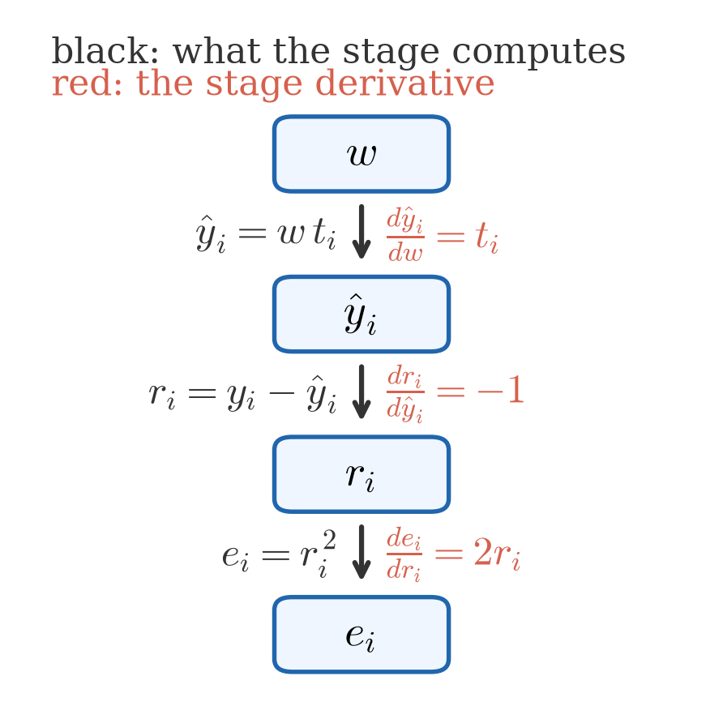
y-hat_i -> r_i -> e_i drawn top to bottom; beside each arrow what the stage computes and, in red, its derivative: t_i, -1, 2r_i" style="float:right; max-height:330px; max-width:30%; margin:0 0 0.5em 1em; border-radius:6px;">
Each stage is a one-variable function. The data \(t_i\) and \(y_i\) are fixed numbers, so \(t_i\) and \(y_i\) act as constants.
Stage 1: \(\hat y_i=t_i\cdot w\) is a line in \(w\) with slope \(t_i\), so \(\;\dfrac{d\hat y_i}{dw}=t_i\).
Stage 2: \(r_i=y_i-\hat y_i\). The constant \(y_i\) contributes \(0\), the term \(-\hat y_i\) contributes \(-1\): \(\;\dfrac{dr_i}{d\hat y_i}=0-1=-1\).
Stage 3: \(e_i=r_i^2\). Power rule: \(\;\dfrac{de_i}{dr_i}=2r_i\).
Read stage 2’s derivative \(-1\): raising a prediction by \(1\) lowers its residual by exactly \(1\). That \(-1\) is where the minus sign in L12’s \(\nabla\mathrm{SSE}=-2\,\mathbf r^\top X\) comes from.
How do the three stage derivatives \(t_i\), \(-1\), \(2r_i\) combine into \(\dfrac{de_i}{dw}\), the rate at which student \(i\)’s squared residual changes when \(w\) changes?
Try it on one student: student 2 at \(w=1\)
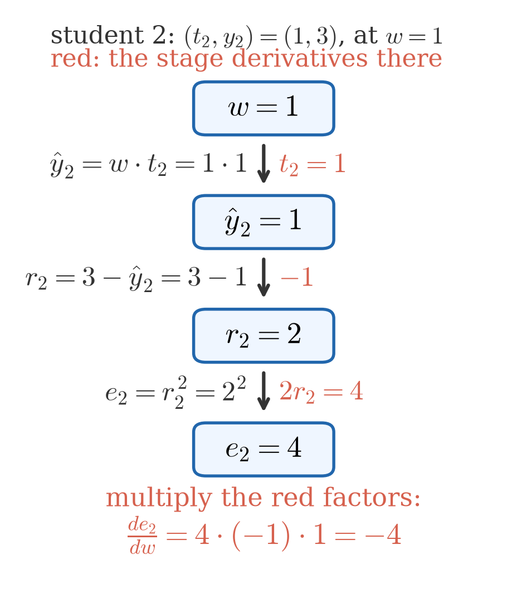
1 -> 2 -> 4 down the chain, stage derivatives 1, -1, 4 in red, product -4" style="float:right; max-height:300px; max-width:26%; margin:0 0 0.5em 1em; border-radius:6px;">
Chain \(w\to\hat y_2=wt_2\to r_2=y_2-\hat y_2\to e_2=r_2^2\); student 2 has \((t_2,y_2)=(1,3)\). At \(w=1\), each stage: its value, then its stage derivative there.
stage
value at \(w=1\)
stage derivative
value at \(w=1\)
\(\hat y_2=w\,t_2\)
\(1\cdot1=1\)
\(\frac{d\hat y_2}{dw}=t_2\)
\(1\)
\(r_2=y_2-\hat y_2\)
\(3-1=2\)
\(\frac{dr_2}{d\hat y_2}\)
\(-1\)
\(e_2=r_2^2\)
\(2^2=4\)
\(\frac{de_2}{dr_2}=2r_2\)
\(2\cdot2=4\)
A guess: multiply the three stage derivatives in the last column: \(\;4\cdot(-1)\cdot1=-4\).
Check directly. \(e_2(w)=(y_2-wt_2)^2=(3-w)^2=9-6w+w^2\), so \(e_2'(w)=-6+2w\), and at \(w=1\): \(-6+2=-4\) ✓.
The product of the stage derivatives is the derivative. Do rates always multiply along a chain?
The chain rule, and why it is believable
Chain rule (MML eq. (5.32), p.145). If \(v=f(w)\) and \(z=g(v)\), so that \(z=g(f(w))\), then
\[\frac{dz}{dw}=g'(f(w))\,f'(w),\qquad\text{written also as}\qquad \frac{dz}{dw}=\frac{dz}{dv}\cdot\frac{dv}{dw},\]
with \(\frac{dz}{dv}\) evaluated at \(v=f(w)\). [MASTER]
Formal proof deferred (it is in any calculus text). Here is the first-order reason, one step at a time:
Take a small step \(\delta\) in \(w\).
First stage \(v=f(w)\): by the first-order prediction \(f(w+\delta)-f(w)\approx f'(w)\,\delta\) (L09’s “Recall, in the language of error”), \(v\) changes by about \(\Delta v\approx f'(w)\,\delta\).
Second stage \(z=g(v)\): the first-order prediction again, now for \(g\) and a step \(\Delta v\) in \(v\), gives \(\Delta z\approx g'(v)\,\Delta v\).
Substitute \(\Delta v\approx f'(w)\,\delta\) into \(\Delta z\approx g'(v)\,\Delta v\): \(\Delta z\approx g'(v)\,f'(w)\,\delta\). Change in \(z\) per unit change in \(w\): \(g'(v)\,f'(w)\). Rates multiply along the chain \(w\to v\to z\).
The chain rule on plain numbers first (MML Example 5.5)
Stage derivatives: \(f'(x)=2\) and \(g'(f)=4f^3\).
At \(x=1\), the inner value is \(f(1)=2\cdot1+1=3\).
Outer rate at the inner value \(3\): \(g'(3)=4\cdot3^3=4\cdot27=108\).
Multiply: \(h'(1)=g'(3)\cdot f'(1)=108\cdot2=216\). MML’s general answer \(8(2x+1)^3\) gives \(8\cdot27=216\) ✓.
Does 216 predict anything? Step \(x\) from \(1\) to \(1.01\), so \(\delta=0.01\).
Inner: \(2(1.01)+1=3.02\), a change of \(0.02=2\times0.01\).
Outer, predicted: \(108\times0.02=2.16\), which is \(216\times0.01\).
Outer, actual: \(3.02^4-3^4=83.1817-81=2.1817\). Close, not equal: the prediction \(2.16\) is only first-order.
Three stages: use the chain rule twice
Our chain \(w\to\hat y_i\to r_i\to e_i\) (\(\hat y_i=wt_i\), \(r_i=y_i-\hat y_i\), \(e_i=r_i^2\)) has three stages, with stage derivatives \(\frac{d\hat y_i}{dw}=t_i\), \(\frac{dr_i}{d\hat y_i}=-1\), \(\frac{de_i}{dr_i}=2r_i\). The chain rule (MML (5.32)) covers two stages, \(v=f(w)\) and \(z=g(v)\). Apply the chain rule twice.
\(e_i\) depends on \(r_i\), and \(r_i\) depends on \(w\). Chain rule once: \(\;\dfrac{de_i}{dw}=\dfrac{de_i}{dr_i}\cdot\dfrac{dr_i}{dw}\).
\(r_i\) depends on \(\hat y_i\), and \(\hat y_i\) depends on \(w\). Chain rule again: \(\;\dfrac{dr_i}{dw}=\dfrac{dr_i}{d\hat y_i}\cdot\dfrac{d\hat y_i}{dw}\).
Substitute the formula for \(\frac{dr_i}{dw}\) into the formula for \(\frac{de_i}{dw}\): \(\;\dfrac{de_i}{dw}=\dfrac{de_i}{dr_i}\cdot\dfrac{dr_i}{d\hat y_i}\cdot\dfrac{d\hat y_i}{dw}\) — one factor per stage.
Put in the three stage derivatives \(2r_i\), \(-1\), \(t_i\): \(\;\dfrac{de_i}{dw}=2r_i\cdot(-1)\cdot t_i\).
The last two factors multiplied, \(2r_i\cdot(-1)=-2r_i\), are L09’s recall fact \(\frac{d}{dx}(c-x)^2=-2r\). The parameter adds the first factor \(t_i\).
All three students at \(w=1\)
\(\mathrm{SSE}(w)=(1-0\cdot w)^2+(3-w)^2+(2-2w)^2=5w^2-14w+14\), so \(\frac{d\,\mathrm{SSE}}{dw}=10w-14\). Chain rule, per student: \(\frac{de_i}{dw}=\frac{de_i}{dr_i}\cdot\frac{dr_i}{d\hat y_i}\cdot\frac{d\hat y_i}{dw}=2r_i\cdot(-1)\cdot t_i\).
\(i\)
\((t_i,y_i)\)
\(r_i=y_i-1\cdot t_i\)
\(2r_i\)
\(-1\)
\(t_i\)
\(\frac{de_i}{dw}=2r_i\cdot(-1)\cdot t_i\)
1
\((0,1)\)
\(1-0=1\)
\(2\)
\(-1\)
\(0\)
\(2\cdot(-1)\cdot0=0\)
2
\((1,3)\)
\(3-1=2\)
\(4\)
\(-1\)
\(1\)
\(4\cdot(-1)\cdot1=-4\)
3
\((2,2)\)
\(2-2=0\)
\(0\)
\(-1\)
\(2\)
\(0\cdot(-1)\cdot2=0\)
\(\mathrm{SSE}=e_1+e_2+e_3\); by the sum rule (MML (5.31), p.145) its derivative at \(w=1\) is \(0+(-4)+0=-4\).
Polynomial check: \(10w-14\) at \(w=1\) is \(10-14=-4\) ✓.
What \(-4\) predicts: \(\mathrm{SSE}(1)=1+4+0=5\), so at \(w=1.1\), \(\mathrm{SSE}\approx5+(-4)(0.1)=4.6\). Actual: residuals \(1-0=1\), \(3-1.1=1.9\), \(2-2.2=-0.2\), so \(\mathrm{SSE}=1+3.61+0.04=4.65\).
\(\mathrm{SSE}=e_1+e_2+e_3\), so by the sum rule \(\;\dfrac{d\,\mathrm{SSE}}{dw}=\dfrac{de_1}{dw}+\dfrac{de_2}{dw}+\dfrac{de_3}{dw}\).
Each term, by the chain rule: \(\dfrac{de_i}{dw}=2r_i\cdot(-1)\cdot t_i=-2t_ir_i\), so \(\;\dfrac{d\,\mathrm{SSE}}{dw}=-2t_1r_1-2t_2r_2-2t_3r_3\).
Factor out \(-2\): \(\;\dfrac{d\,\mathrm{SSE}}{dw}=-2\,(t_1r_1+t_2r_2+t_3r_3)\).
The bracket is the dot product of \(\mathbf t=(t_1,t_2,t_3)^\top\) and \(\mathbf r=(r_1,r_2,r_3)^\top\): \(\;\dfrac{d\,\mathrm{SSE}}{dw}=-2\,\mathbf t^\top\mathbf r\). [MASTER]
Check against \(10w-14\), for every \(w\): \(\mathbf r=\mathbf y-w\mathbf t\), so \(\mathbf t^\top\mathbf r=\mathbf t^\top\mathbf y-w\,\mathbf t^\top\mathbf t\).
\(\mathbf t^\top\mathbf y=0\cdot1+1\cdot3+2\cdot2=7\) and \(\mathbf t^\top\mathbf t=0^2+1^2+2^2=5\).
\(-2\,\mathbf t^\top\mathbf r=-2(7-5w)=-14+10w=10w-14\) ✓, without expanding \(\mathrm{SSE}\).
Your turn, \(w=\tfrac75\) (L09’s best one-parameter rule): \(\mathbf r=\mathbf y-\tfrac75\mathbf t=\left(1,\tfrac85,-\tfrac45\right)^\top\) and \(-2\,\mathbf t^\top\mathbf r=-2\left(0+\tfrac85-\tfrac85\right)=0\) ✓: students 2 and 3 pull \(w\) in opposite directions, equally hard.
What the chain rule shows: one stage with derivative \(0\) makes \(\frac{de_i}{dw}=0\)
Call a stage flat at a point when its stage derivative there is \(0\). Our stage derivatives: \(\frac{d\hat y_i}{dw}=t_i\), \(\frac{dr_i}{d\hat y_i}=-1\), \(\frac{de_i}{dr_i}=2r_i\).
\(\frac{de_i}{dw}\) is the product \(\frac{de_i}{dr_i}\cdot\frac{dr_i}{d\hat y_i}\cdot\frac{d\hat y_i}{dw}\). If one of these three factors is \(0\), \(\frac{de_i}{dw}\) is \(0\), whatever the other two are.
Data \((t_i,y_i)=(0,1),(1,3),(2,2)\) at \(w=1\): \(r_i=y_i-1\cdot t_i\) gives \(\mathbf r=(1,2,0)^\top\). Two different flat stages:
Student 1, stage 1 flat: \(t_1=0\) hours, so \(\hat y_1=w\cdot0\) does not move when \(w\) moves. \(\frac{de_1}{dw}=2\cdot(-1)\cdot0=0\), even though \(r_1=1\neq0\).
Student 3, stage 3 flat: \(r_3=0\), so \(\frac{de_3}{dr_3}=2\cdot0=0\). \(\frac{de_3}{dw}=0\cdot(-1)\cdot2=0\), even though \(t_3=2\neq0\).
Either way, the student with a flat stage (student 1 or student 3) contributes \(0\) to \(\frac{d\,\mathrm{SSE}}{dw}\) at \(w=1\).
Differentiating \(\mathrm{SSE}(w)=5w^2-14w+14\) gives \(10w-14\), which at \(w=1\) is \(-4=0+(-4)+0\), but cannot say which student or which stage made each term \(0\). The chain rule, stage by stage, can.
A fixed bound \(c<1\) makes the product shrink exponentially
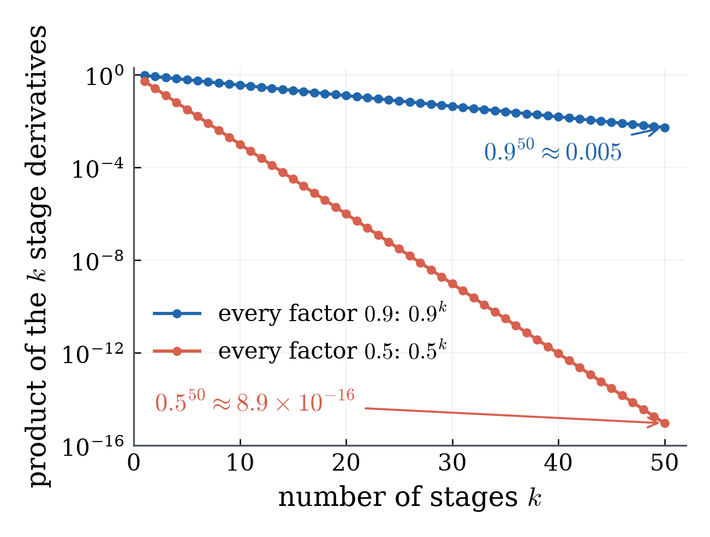
By the chain rule, a chain of \(k\) stages has a derivative that is a product of \(k\) stage derivatives. If all \(k\) factors have size at most one fixed \(c<1\) — every factor \(0.9\), say — the product is at most \(c^k\) and shrinks fast.
number of factors \(k\)
every factor \(0.5\): product \(0.5^k\)
every factor \(0.9\): product \(0.9^k\)
\(1\)
\(0.5\)
\(0.9\)
\(2\)
\(0.5\cdot0.5=0.25\)
\(0.9\cdot0.9=0.81\)
\(10\)
\(\tfrac{1}{2^{10}}=\tfrac{1}{1024}\approx0.001\)
\(\approx0.349\)
\(50\)
\(\approx8.9\times10^{-16}\)
\(\approx0.005\)
⚠️ “Each factor below \(1\)” is not enough — factors creeping up to \(1\), such as \(1-\tfrac12,\,1-\tfrac14,\,1-\tfrac18,\dots\), give a product that stays near \(0.29\). What matters is a fixed ceiling \(c<1\).
Row \(k=50\): with \(50\) factors of \(0.9\), a small step \(\delta\) at the input of a \(50\)-stage chain moves its last output by only about \(0.005\,\delta\).
So the derivative of the error with respect to a parameter at the start of a long chain can be nearly \(0\), and the update to that parameter is tiny, so it barely moves.
This scalar chain is the simplest version of the vanishing-gradient problem of deep networks, whose stages are vectors: L14 replaces the scalar factors by Jacobians. [UNDERSTAND]
What the chain rule shows: change one stage, change one factor [UNDERSTAND]
A separate example, same data \((t_i,y_i)=(0,1),(1,3),(2,2)\): swap the model for \(\hat y_i=e^{wt_i}\), so \(r_i=y_i-e^{wt_i}\), \(e_i=r_i^2\).
Stage 1 changes. \(\hat y_i=e^{wt_i}\) is itself a two-stage chain: inner \(u=t_iw\) with \(\frac{du}{dw}=t_i\); outer \(\hat y_i=e^{u}\) with \(\frac{d\hat y_i}{du}=e^{u}\).
So \(\;\dfrac{d\hat y_i}{dw}=e^{u}\cdot t_i=t_i\,e^{wt_i}\).
New product: \(\;\dfrac{de_i}{dw}=2r_i\cdot(-1)\cdot t_ie^{wt_i}=-2\,t_i\,r_i\,e^{wt_i}\).
Against \(-2\,t_i\,r_i\) for the model \(\hat y_i=wt_i\): one extra factor \(e^{wt_i}\), coming from stage 1, the only stage that changed.
Here \(\mathrm{SSE}(w)=(1-e^{0\cdot w})^2+(3-e^{w})^2+(2-e^{2w})^2=0+(3-e^{w})^2+(2-e^{2w})^2\) is not a polynomial in \(w\), so there is no polynomial to expand. The chain rule works anyway.
In numbers, at \(w=0\): every prediction is \(e^{0}=1\), so \(\mathbf r=(0,2,1)^\top\) and \(\frac{d\,\mathrm{SSE}}{dw}=\sum_i2r_i\cdot(-1)\cdot t_ie^{0}=0-4-4=-8\).
L13 takeaways
A model is a chain: \(w\to\hat y_i\to r_i\to e_i\), with stage derivatives \(t_i\), \(-1\), \(2r_i\). [MASTER]
Chain rule (MML (5.32), p.145): stage derivatives multiply along \(w\to\hat y_i\to r_i\to e_i\), so \(\frac{de_i}{dw}=2r_i\cdot(-1)\cdot t_i=-2\,t_i\,r_i\). [MASTER]
Summing over students: \(\frac{d\,\mathrm{SSE}}{dw}=-2\,\mathbf t^\top\mathbf r=10w-14\), the derivative of \(\mathrm{SSE}(w)=(1-0\cdot w)^2+(3-w)^2+(2-2w)^2=5w^2-14w+14\) — checked at \(w=1\) (value \(-4\)) and at \(w=\tfrac75\) (value \(0\)). [MASTER]
One stage with derivative \(0\) makes \(\frac{de_i}{dw}=0\); a product of many stage derivatives smaller than \(1\) in size is nearly \(0\) (vanishing gradients). [UNDERSTAND]
Change one stage, change one factor: \(\hat y_i=e^{wt_i}\) gives \(\frac{de_i}{dw}=-2\,t_i\,r_i\,e^{wt_i}\). [UNDERSTAND]
We differentiated one student at a time. But the three predictions move together, as one vector. What is the derivative of a vector? L14.
L14 — When a Stage Is a Vector
Reading: MML §5.3, pp.149–154 (Definition 5.6, the Jacobian, p.150; Example 5.9, p.153; Example 5.11, p.154) and §5.2.2, p.148 (the chain rule (5.48)).
The prediction stage is a vector-valued function
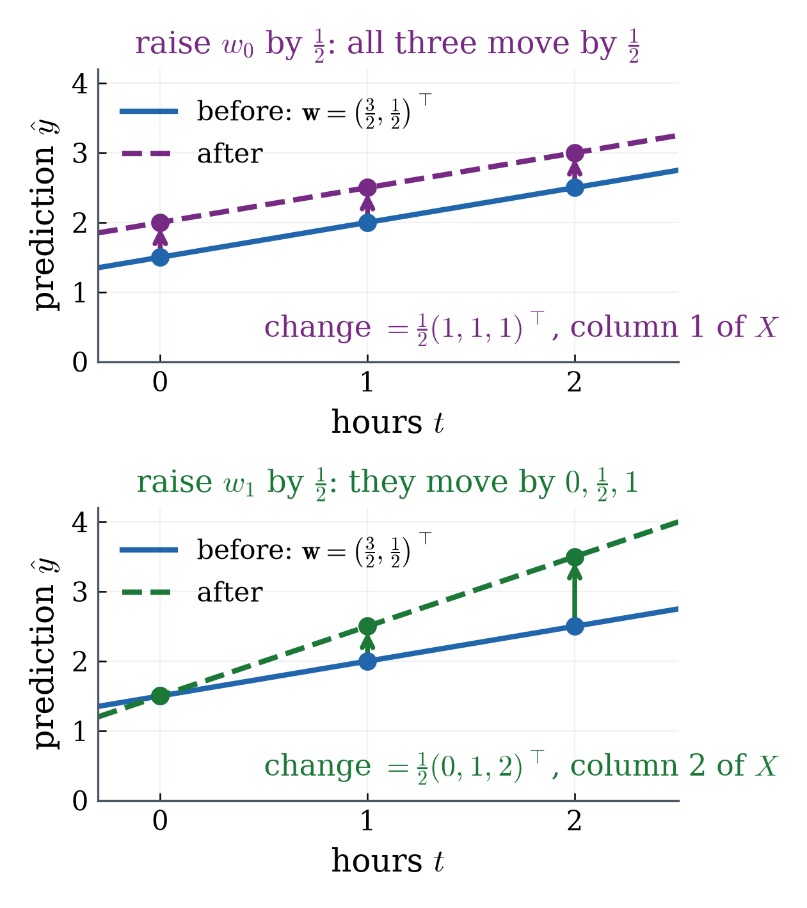
Back to two parameters, \(\mathbf w=(w_0,w_1)^\top\). L13 followed one student at a time, but the prediction stage \(\hat{\mathbf y}(\mathbf w)=X\mathbf w\) produces all students’ predictions at once: \(2\) numbers in, \(3\) out, a vector-valued function \(\R^2\to\R^3\) (MML §5.3, eq. (5.54), p.149). Row by row:
\(\hat y_1=w_0\): student 1 studied \(0\) hours, so the prediction is the intercept alone.
\(\hat y_2=w_0+w_1\) (1 hour) and \(\hat y_3=w_0+2w_1\) (2 hours).
Nudge each parameter (the figure, from \(\left(\tfrac32,\tfrac12\right)^\top\)): raising \(w_0\) by \(\tfrac12\) moves the three predictions by \(\left(\tfrac12,\tfrac12,\tfrac12\right)^\top\); raising \(w_1\) by \(\tfrac12\) moves them by \(\left(0,\tfrac12,1\right)^\top\). Per unit of nudge: \((1,1,1)^\top\) and \((0,1,2)^\top\).
Each of \(3\) predictions responds to each of \(2\) parameters: six partial derivatives; with \(1000\) students and \(50\) parameters, \(50{,}000\). L13 had one number in and one out at every arrow. How do we arrange them so that the chain rule still works?
The Jacobian: every partial derivative, in one matrix
Definition (MML Def. 5.6, (5.58)–(5.59), p.150). For \(\mathbf f:\R^n\to\R^m\) with outputs \(f_1,\dots,f_m\) and inputs \(x_1,\dots,x_n\), the Jacobian \(J_{\mathbf f}\), also written \(\dfrac{d\mathbf f}{d\mathbf x}\), is the \(m\times n\) matrix
\[J_{\mathbf f}=\begin{bmatrix}\dfrac{\partial f_1}{\partial x_1}&\cdots&\dfrac{\partial f_1}{\partial x_n}\\ \vdots&&\vdots\\ \dfrac{\partial f_m}{\partial x_1}&\cdots&\dfrac{\partial f_m}{\partial x_n}\end{bmatrix},\qquad (i,j)\text{ entry }=\frac{\partial f_i}{\partial x_j}:\]
one row per output, one column per input. [MASTER]
Each entry is a partial derivative (L09, MML Def. 5.5): differentiate the output \(f_i\) in the input \(x_j\), with the other inputs held fixed.
Row \(i\) lists how the one output \(f_i\) responds to each input. Column \(j\) lists how every output responds to the one input \(x_j\).
The entries are functions of \(\mathbf x\). To get numbers, evaluate the Jacobian at a point.
The Jacobian of the prediction stage is \(X\)
The stage: \(\hat{\mathbf y}=X\mathbf w\), where \(X\) has rows \((1,0),\,(1,1),\,(1,2)\), \(\mathbf w=(w_0,w_1)^\top\). Inputs \(w_0,w_1\) (\(n=2\)), outputs \(\hat y_1,\hat y_2,\hat y_3\) (\(m=3\)), so \(J_{\hat{\mathbf y}}\) is \(3\times2\). One row per prediction:
Row 1, \(\hat y_1=w_0\): \(\;\partial\hat y_1/\partial w_0=1\), and \(\partial\hat y_1/\partial w_1=0\) because \(w_1\) does not appear.
No \(w_0\) or \(w_1\) is left in any entry, so \(J_{\hat{\mathbf y}}=X\) at every \(\mathbf w\). Any \(X\) works the same way: \(\hat y_i=\sum_j X_{ij}w_j\), so \(\partial\hat y_i/\partial w_j=X_{ij}\), the entry of \(X\) in row \(i\), column \(j\) (MML Example 5.9, p.153).
The Jacobian of the prediction stage is \(X\) itself — the matrix students have been carrying since Week 2. Nothing new had to be built. [MASTER]
Quick check, separate example: a Jacobian computed entry by entry
A separate example, not our data: \(\;\mathbf f(x_1,x_2)=\begin{bmatrix}x_1^2x_2\\3x_1+x_2^2\end{bmatrix}\), a function \(\R^2\to\R^2\), so \(J_{\mathbf f}\) is \(2\times2\).
\(\dfrac{\partial f_1}{\partial x_1}\): hold \(x_2\) fixed, so \(x_1^2x_2\) is \(x_2\) times \(x_1^2\), and the derivative is \(x_2\cdot2x_1=2x_1x_2\).
\(\dfrac{\partial f_1}{\partial x_2}\): hold \(x_1\) fixed, so \(x_1^2x_2\) is the constant \(x_1^2\) times \(x_2\), and the derivative is \(x_1^2\cdot1=x_1^2\).
\(\dfrac{\partial f_2}{\partial x_1}\): \(3x_1\) gives \(3\); \(x_2^2\) is held fixed, so it gives \(0\). Total \(3+0=3\).
\(\dfrac{\partial f_2}{\partial x_2}\): \(3x_1\) is held fixed, so it gives \(0\); \(x_2^2\) gives \(2x_2\). Total \(0+2x_2=2x_2\).
The output at \((1,2)^\top\): \(\mathbf f(1,2)=\big(1^2\cdot2,\;3\cdot1+2^2\big)^\top=(2,\,7)^\top\).
The residual stage: its Jacobian is \(-I\)
The stage \(\mathbf r=\mathbf y-\hat{\mathbf y}\) (data minus prediction) takes the \(3\) predictions to the \(3\) residuals: \(\R^3\to\R^3\), so its Jacobian is \(3\times3\). The data \(\mathbf y=(1,3,2)^\top\) are fixed numbers.
Written out: \(\;r_1=1-\hat y_1,\quad r_2=3-\hat y_2,\quad r_3=2-\hat y_3\).
Diagonal entries: \(\partial r_i/\partial\hat y_i=0-1=-1\), the constant \(y_i\) giving \(0\). The diagonal \(-1\) is L13's \(dr_i/d\hat y_i=-1\).
Off-diagonal entries: \(r_1=1-\hat y_1\) contains no \(\hat y_2\) and no \(\hat y_3\), so \(\partial r_1/\partial\hat y_2=\partial r_1/\partial\hat y_3=0\). Likewise \(r_2\) contains only \(\hat y_2\), and \(r_3\) only \(\hat y_3\).
Like the prediction stage's Jacobian \(X\), the Jacobian \(-I\) is the same at every point: no \(\hat y_i\) is left in it.
The six zeros say something L13 never had to say: one student's residual does not respond to another student's prediction.
The error stage: one output, so one row
The chain so far: \(\hat{\mathbf y}=X\mathbf w\), \(\;\mathbf r=\mathbf y-\hat{\mathbf y}\) with \(\mathbf y=(1,3,2)^\top\). The last stage is the error \(\mathrm{SSE}=\mathbf r^\top\mathbf r=r_1^2+r_2^2+r_3^2\). It takes the \(3\) residuals to \(1\) number: \(\R^3\to\R\), so its Jacobian is \(1\times3\).
\(\dfrac{\partial\,\mathrm{SSE}}{\partial r_1}\): \(r_2^2\) and \(r_3^2\) are held fixed and give \(0\); \(r_1^2\) gives \(2r_1\). Total \(2r_1+0+0=2r_1\).
Each entry is L13's \(de_i/dr_i=2r_i\) for one student, now collected into one row.
Unlike \(X\) (prediction stage) and \(-I\) (residual stage), the Jacobian \(2\mathbf r^\top\) changes from point to point. At \(\mathbf w=(0,0)^\top\) the residual is \(\mathbf r=\mathbf y-X\mathbf 0=(1,3,2)^\top\), and there it is \(\begin{bmatrix}2\cdot1&2\cdot3&2\cdot2\end{bmatrix}=\begin{bmatrix}2&6&4\end{bmatrix}\).
A function with one output has a Jacobian with one row. A row of partial derivatives of one output already has a name in this course.
A one-row Jacobian is the gradient
For \(g:\R^n\to\R\) (\(m=1\)) the Jacobian is the \(1\times n\) row \(\begin{bmatrix}\partial g/\partial x_1&\cdots&\partial g/\partial x_n\end{bmatrix}\) — exactly L11's gradient \(\nabla g\) (MML (5.40), p.146). [MASTER]
MML identifies the gradient with the one-row Jacobian where it defines the gradient: the row in (5.40) is called “the gradient of \(f\) or the Jacobian” (p.146); again after Def. 5.6 (p.150).
On our data: \(\mathrm{SSE}(w_0,w_1)=3w_0^2+6w_0w_1+5w_1^2-12w_0-14w_1+14\), with \(1\) output and \(2\) inputs. Term by term:
\(\partial/\partial w_0\): \(\;6w_0+6w_1+0-12-0+0\); \(\quad\partial/\partial w_1\): \(\;0+6w_0+10w_1-0-14+0\). In a row:
\[\frac{d\,\mathrm{SSE}}{d\mathbf w}=\begin{bmatrix}6w_0+6w_1-12&6w_0+10w_1-14\end{bmatrix}=\nabla\mathrm{SSE}\quad\text{(L11's gradient).}\]
Why the book writes gradients as rows (Remark “Gradient as a Row Vector”, p.147): the gradient then extends to vector-valued functions as a matrix, the Jacobian; and the chain rule applies with no adjustment of dimensions. So writing the gradient as a row in L11 was the book's convention arriving early, not a preference.
Three Jacobians at \((0,0)^\top\): multiply them, as L13 multiplied rates?
Stages \(\hat{\mathbf y}=X\mathbf w\), \(\mathbf r=\mathbf y-\hat{\mathbf y}\), \(\mathrm{SSE}=\mathbf r^\top\mathbf r\), with \(X\) with rows \((1,0),\,(1,1),\,(1,2)\), \(\mathbf y=(1,3,2)^\top\); stage Jacobians \(X\), \(-I\), \(2\mathbf r^\top\). L13 multiplied the stage derivatives, last stage first. Try the same with the Jacobians.
Forward first, to get the point where each Jacobian is evaluated:
Then multiply \((2\mathbf r^\top)(-I)X\). Error-stage factor: \(2\mathbf r^\top=\begin{bmatrix}2\cdot1&2\cdot3&2\cdot2\end{bmatrix}=\begin{bmatrix}2&6&4\end{bmatrix}\).
Times \(-I\): every sign flips, \(\begin{bmatrix}-2&-6&-4\end{bmatrix}\). Times \(X\): \(\begin{bmatrix}-2-6-4&0-6-8\end{bmatrix}=\begin{bmatrix}-12&-14\end{bmatrix}\).
The product of the stage Jacobians, last stage first, is the gradient. Always?
The chain rule, matrix form
Chain rule, matrix form (MML (5.48), p.148). [MASTER] Let \(\mathbf g:\R^n\to\R^k\) be differentiable at \(\mathbf w\), and \(\mathbf f:\R^k\to\R^m\) differentiable at \(\mathbf g(\mathbf w)\). Then
\[J_{\mathbf f\circ\mathbf g}(\mathbf w)=J_{\mathbf f}\big(\mathbf g(\mathbf w)\big)\;J_{\mathbf g}(\mathbf w),\qquad\text{sizes: }(m\times n)=(m\times k)(k\times n).\]
Stated, not proved here. On our three-stage model the product \((2\mathbf r^\top)(-I)X\) gave \(\begin{bmatrix}-12&-14\end{bmatrix}\) at \((0,0)^\top\); the next slides check it at every \(\mathbf w\).
\(J_{\mathbf f}\) is evaluated at \(\mathbf g(\mathbf w)\), the point the inner stage delivers — not at \(\mathbf w\).
The \(k\) columns of \(J_{\mathbf f}\) and the \(k\) rows of \(J_{\mathbf g}\) both belong to the middle variables \(v_1,\dots,v_k\), so the product is defined. Entry \((i,j)\): \(\;\dfrac{\partial(\mathbf f\circ\mathbf g)_i}{\partial w_j}=\displaystyle\sum_{l=1}^{k}\frac{\partial f_i}{\partial v_l}\,\frac{\partial v_l}{\partial w_j}\), one product per middle variable, then add.
If \(n=k=m=1\), every Jacobian is \(1\times1\) and the rule is L13's \(\;dz/dw=(dz/dv)\cdot(dv/dw)\).
L11 used the matrix chain rule without stating it. For \(\phi(h)=g(\mathbf w+h\mathbf u)\), the inner map \(h\mapsto\mathbf w+h\mathbf u\) has Jacobian \(\mathbf u\) (\(2\times1\)) and the outer \(g\) has Jacobian \(\nabla g\) (\(1\times2\)), so \(\phi'(0)=\nabla g(\mathbf w)\,\mathbf u\).
Prediction, residual, error: three stages as one chain
Data \(X\) with rows \((1,0),\,(1,1),\,(1,2)\), \(\mathbf y=(1,3,2)^\top\); chain rule \(J_{\mathbf f\circ\mathbf g}=J_{\mathbf f}\,J_{\mathbf g}\) (MML (5.48), p.148).
Sizes match (\(3\) with \(3\), twice); the result is \(1\times2\), a gradient's shape. Left to right, \((2\mathbf r^\top)(-I)X\) needs no transpose: MML's second reason for rows (Remark, p.147).
Multiply \((2\mathbf r^\top)(-I)X\), one step at a time
The chain rule \(J_{\mathbf f\circ\mathbf g}=J_{\mathbf f}J_{\mathbf g}\) on the stages \(\hat{\mathbf y}=X\mathbf w\), \(\mathbf r=\mathbf y-\hat{\mathbf y}\), \(\mathrm{SSE}=\mathbf r^\top\mathbf r\) gives \(d\,\mathrm{SSE}/d\mathbf w=(2\mathbf r^\top)(-I)X\).
Step 1. \((2\mathbf r^\top)(-I)\): \(\;(1\times3)(3\times3)\to1\times3\). Row times each column of \(-I\):
Step 2 is \(-2\,\mathbf r^\top X\): L12's \(\nabla\mathrm{SSE}=-2\,\mathbf r^\top X\), rebuilt one stage at a time, without expanding \(\mathrm{SSE}\). [MASTER]
The row \(-2\mathbf r^\top X\), written in \(w_0\) and \(w_1\)
The product of the three Jacobians gave \(d\,\mathrm{SSE}/d\mathbf w=-2\mathbf r^\top X=\begin{bmatrix}-2(r_1+r_2+r_3)&-2(r_2+2r_3)\end{bmatrix}\). Substitute \(\mathbf r=\mathbf y-X\mathbf w\) with \(\mathbf y=(1,3,2)^\top\), \(X\) with rows \((1,0),\,(1,1),\,(1,2)\), row by row: \(\;r_1=1-w_0,\quad r_2=3-w_0-w_1,\quad r_3=2-w_0-2w_1\).
First entry. \(r_1+r_2+r_3=(1+3+2)-(w_0+w_0+w_0)-(0+w_1+2w_1)=6-3w_0-3w_1\).
Times \(-2\): \(\;-12+6w_0+6w_1\).
Second entry. \(r_2+2r_3=(3-w_0-w_1)+(4-2w_0-4w_1)=7-3w_0-5w_1\).
Times \(-2\): \(\;-14+6w_0+10w_1\).
The two entries \(6w_0+6w_1-12\) and \(6w_0+10w_1-14\) are exactly L09's partial derivatives of \(\mathrm{SSE}(w_0,w_1)=3w_0^2+6w_0w_1+5w_1^2-12w_0-14w_1+14\).
Your turn, at \(\mathbf w^\ast=\left(\tfrac32,\tfrac12\right)^\top\): \(\mathbf r^\ast=\left(-\tfrac12,1,-\tfrac12\right)^\top\), \(2\mathbf r^{\ast\top}=\begin{bmatrix}-1&2&-1\end{bmatrix}\); times \(-I\): \(\begin{bmatrix}1&-2&1\end{bmatrix}\); times \(X\): \(\begin{bmatrix}1-2+1&0-2+2\end{bmatrix}=\begin{bmatrix}0&0\end{bmatrix}\) ✓, L10’s lowest point. Only \(2\mathbf r^\top\) changed; \(-I\) and \(X\) are the same at every \(\mathbf w\).
L14 takeaways
A stage with several inputs and several outputs is a vector-valued function; its Jacobian holds every partial derivative, one row per output, one column per input (MML Def. 5.6, p.150). [MASTER]
Our three stages: prediction \(\hat{\mathbf y}=X\mathbf w\) has Jacobian \(X\); residual \(\mathbf r=\mathbf y-\hat{\mathbf y}\) has \(-I\); error \(\mathrm{SSE}=\mathbf r^\top\mathbf r\) has the one row \(2\mathbf r^\top\). [MASTER]
A one-row Jacobian is the gradient: that is why the gradient is a row (MML (5.40), p.146; Remark, p.147). [MASTER]
Chain rule, matrix form (MML (5.48), p.148): Jacobians multiply, last stage first. \((2\mathbf r^\top)(-I)X=-2\,\mathbf r^\top X\) rebuilds L12’s gradient: \(\begin{bmatrix}-12&-14\end{bmatrix}\) at \((0,0)^\top\), \(\begin{bmatrix}0&0\end{bmatrix}\) at \(\mathbf w^\ast\). [MASTER]
Three routes, one row \(\begin{bmatrix}6w_0+6w_1-12&6w_0+10w_1-14\end{bmatrix}\): the expanded polynomial (L09), two matrix rules (L12), a product of three Jacobians (L14). [MASTER]
We now know which way to change the parameters: \(-(\nabla\mathrm{SSE})^\top\). Not yet how far. That is Unit 5.
Where Unit 4 goes next
Backpropagation applies the matrix chain rule of this lecture efficiently, propagating derivatives backward through the stages of a model. Every stage of a neural network contributes one factor, exactly as our prediction, residual and error stages did. [EXPLORE]
\(\nabla f=\mathbf 0^\top\) is not the right condition when the parameters must satisfy a constraint. Unit 3's question — the largest variance among unit directions — is exactly that situation. Unit 3 already answered it with algebra; Unit 5’s Lagrange multipliers give the textbook’s other proof, and they are themselves a derivative method.
Unit 4 in one sentence. If I change the parameters a little, how does the error change? → one number: the derivative → one parameter fitted to data: the same derivative, and L03's projection coefficient → two parameters: one partial derivative each, and Unit 2's normal equation → any direction: \((\nabla f)^\top\), orthogonal to the contours → any number of features: \(\nabla\mathrm{SSE}=-2\mathbf r^\top X\), zero exactly at the normal equation → and the same derivative again, one stage at a time, where the middle Jacobian is \(X\).
What Unit 4 does not answer. The direction is settled — \(-(\nabla f)^\top\), a column, the gradient row transposed — but not the distance: \(\mathbf w_{\text{new}}=\mathbf w-\alpha(\nabla f)^\top\) with \(\alpha=\,?\) The first-order prediction is local, so a large \(\alpha\) can overshoot and raise the error. Unit 5 takes that question up.